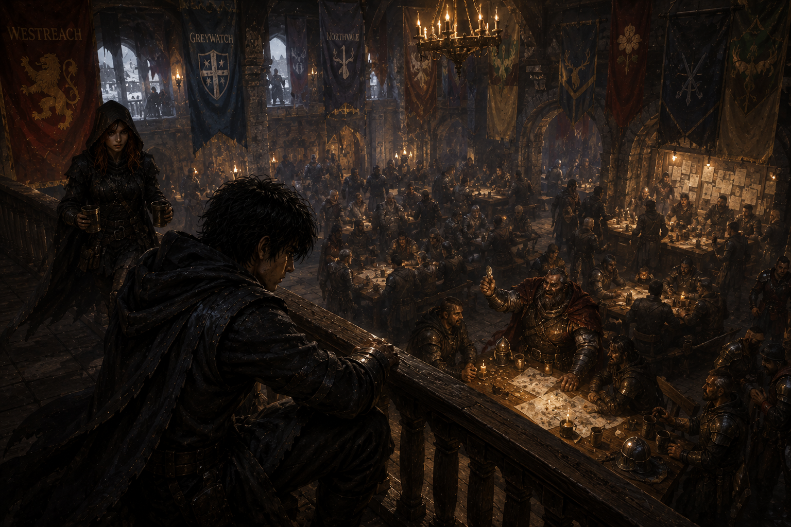
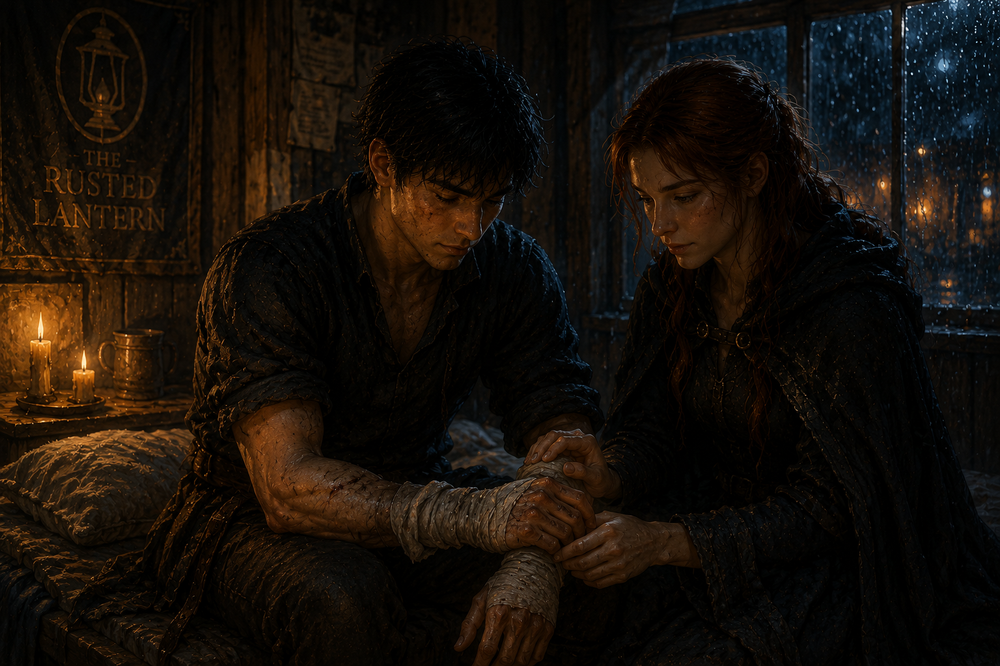
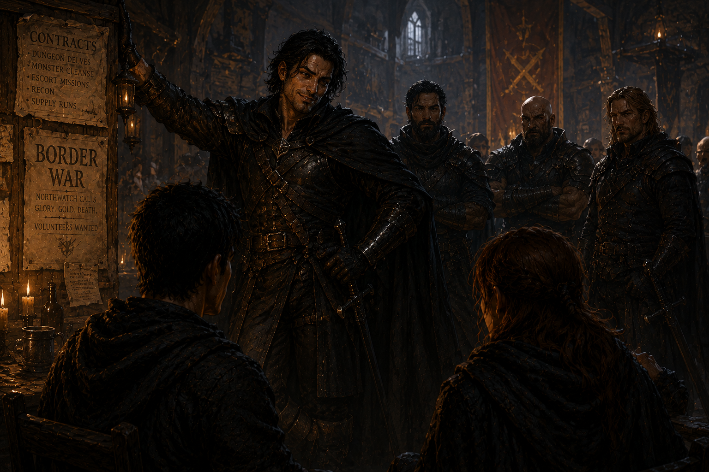
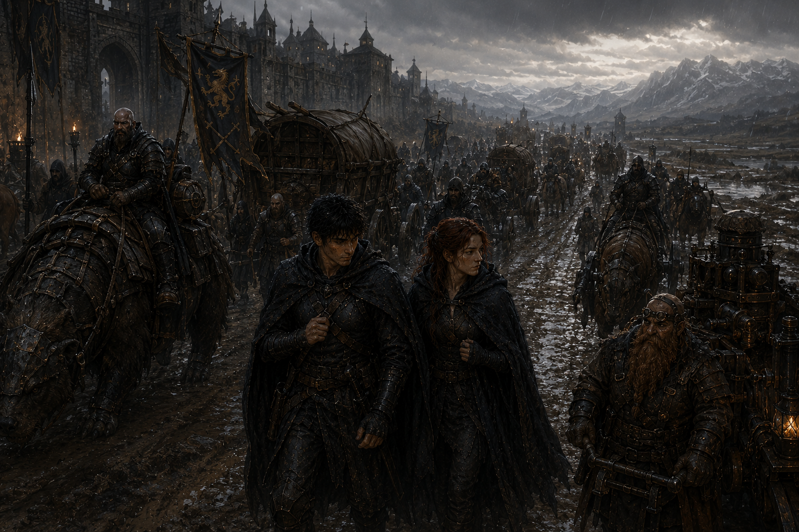
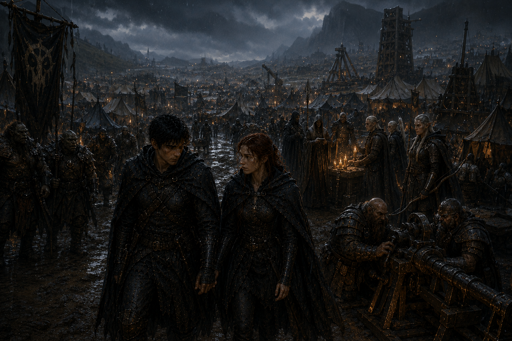
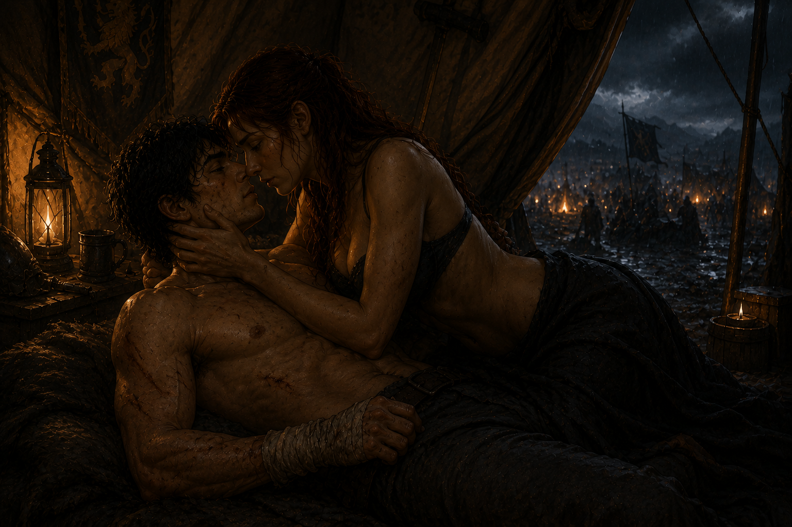
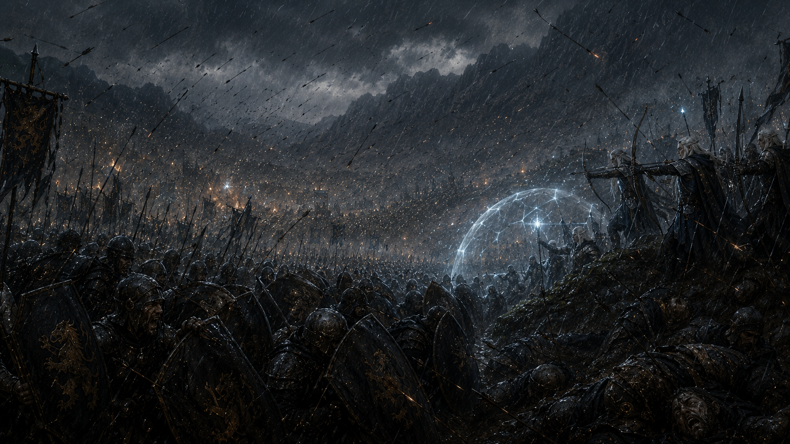
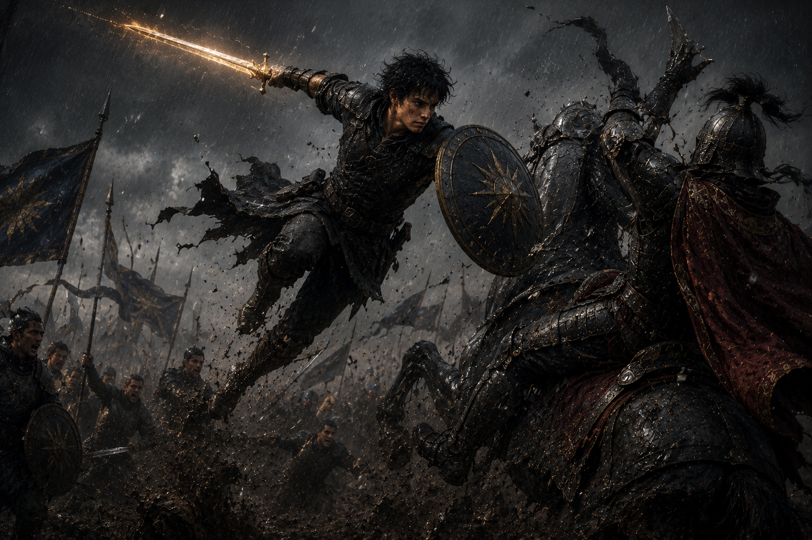
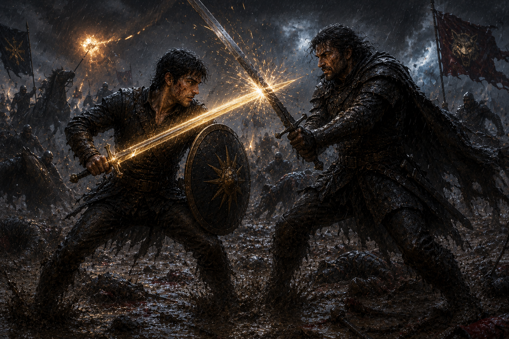

Sundered Age — Year 1037
Westreach no longer smelled like rain and ale.
Now it smelled like iron.
Hot forge smoke.
Horse sweat.
Blood.
War had not officially reached the city yet.
But everyone could already taste it.
The adventurer district changed first.
Dungeon contracts disappeared from the main guild boards one by one while military requests multiplied across entire walls.
Escort missions.
Frontier patrols.
Supply defense.
Mercenary recruitment.
Some requests no longer even bothered hiding what they truly meant.
INFANTRY REPLACEMENTS NEEDED
HIGH CASUALTY EXPECTED
Veteran adventurer parties dissolved constantly.
Some enlisted for coin.
Some fled south.
Some simply vanished into the borderlands chasing safer work that no longer existed.
The lucky ones still hunted monsters.
The desperate ones hunted men.
Rayden sat near the upper guild balcony silently watching recruitment officers argue below.
Military banners from half a dozen regional states hung inside the hall now.
None trusted each other.
All needed soldiers.
Westreach had become neutral ground for war.

Westreach Mercenary Guild · Tense RecruitmentThe Ashkar Dominion sought mercenary infantry for eastern border expansion.
The Veyrhold Marches hired battlemages aggressively after losing two fortress towns.
Southern frontier clans recruited beast riders and scouts for skirmish warfare.
Dawncliff coastal houses purchased entire ship crews in advance anticipating naval conflict.
Even the Elderwood border kingdoms quietly increased ranger patrols near disputed forests.
The continent fractured more every season.
No kingdom possessed enough strength to unite it.
Most barely survived themselves.
Below the balcony, a drunken mercenary captain laughed while showing fresh coin to a table full of exhausted adventurers.
“Three months guarding caravans got me less than two weeks killing border soldiers.”
No one disagreed.
Selene approached carrying two mugs of heated spiced wine.
Her hood remained lowered despite the cold.
Several adventurers still watched her openly whenever she entered the guild now.
Mostly because surviving Hollowwatch and the Temporal Rift beside Rayden had turned both of them into frontier legends far earlier than either wanted.
Selene handed him one of the mugs.
“You’ve been staring at the mercenary board for twenty minutes.”
Rayden took the drink quietly.
“Trying to decide if I hate the idea.”
Selene sat beside him.
“And?”
Rayden looked across the crowded guild hall below.
Wounded soldiers.
Refugees.
Mercenaries gambling beside battlemages.
Dwarven engineers arguing over artillery diagrams.
Orc caravan guards drinking hard enough to start fights accidentally.
The world was changing.
Fast.
“I think the world already decided for us.”
Their room above the Rusted Lantern tavern had become smaller lately.
Not physically.
Emotionally.

Rayden & Selene · The Rusted LanternThe closer war crept toward Westreach, the more both of them understood this fragile life could not last.
That night heavy rain hammered against the windows while distant thunder rolled across the city.
Selene sat cross-legged on the bed counting remaining silver coins beneath candlelight.
The answer clearly displeased her.
“If we keep refusing military contracts, we last maybe another month.”
Rayden leaned against the wall removing combat wraps from his hands slowly.
Fresh scars crossed portions of his forearms from recent Temporal Frenzy training.
Selene noticed immediately.
She always did.
“You used it again.”
Rayden shrugged once.
“Only briefly.”
“That’s not the point.”
Selene moved toward him before he could answer further.
Her fingers closed carefully around his wrist.
Warm.
Familiar.
She studied the damage silently beneath candlelight.
“You’re pushing harder.”
Rayden avoided her eyes.
“I need to.”
Selene stepped closer.
Close enough now that he could smell rainwater still lingering in her hair.
“You always say that.”
For several seconds neither moved.
The storm outside filled the silence for them.
Then Selene slowly pulled his hand toward her lips and kissed the bruised knuckles gently.
Rayden’s breathing changed immediately.
“You’re impossible.”
Selene smiled faintly.
“And yet you keep me around.”
Rayden finally looked at her properly then.
The candlelight softened the sharpness war had slowly carved into both of them these past years.
For a brief moment they almost looked young again.
Then Selene climbed into his lap.
Slowly.
Deliberately.
Her fingers slid behind his neck while rain thundered harder outside the tavern windows.
“Stop thinking about wars for one night.”
Rayden’s hands settled against her waist instinctively.
Gods.
She felt warm.
Alive.
Real.
After all the blood and ruin and nightmares...
sometimes that alone felt miraculous.
The kiss started softly.
Then became desperate.
Months of fear and exhaustion poured into it all at once.
Selene pushed him backward onto the bed while his hands moved beneath her shirt searching skin like reassurance she still existed.
She shivered when his fingers traced old scars along her ribs.
Not from fear.
From memory.
“You almost died in the Rift.”
Her voice sounded smaller now.
More honest.
Rayden touched her face carefully.
“So did you.”
Selene looked at him for a long moment afterward.
Then kissed him again harder than before.
The storm swallowed the rest.
Armor pieces hit wooden floorboards.
Candlelight flickered across tangled sheets.
Old scars crossed bare skin beneath trembling hands.
And for one fragile night above a dying mercenary city...
they chose each other over the war waiting outside.
Morning returned brutally.
The guild hall overflowed with soldiers by sunrise.
Mercenary banners lined entire corridors now.
Arguments erupted constantly over pay, territory, and battlefield rumors.
A pair of beastkin scouts nearly killed a drunken infantry officer near the entrance before guards separated them.
No one seemed surprised.
Rayden and Selene descended into the chaos together.
Several eyes followed them immediately.
Mostly Rayden.
Dawnpiercer attracted attention even covered.
Temporal Rift rumors made it worse.
That was when Darian Wolfe appeared.

Darian Wolfe · The War OfferThe mercenary captain leaned casually against the contract board wearing black leather war armor beneath a dark fur-lined coat.
Thirty-one years old.
Tall.
Sharp-eyed.
The kind of man who looked dangerous even while smiling.
A longsword rested across his shoulder casually while three armed mercenaries stood nearby behind him.
Darian looked directly at Rayden.
Then smirked.
“So the Wall-Climber finally decided war pays better than monsters.”
Rayden recognized him immediately.
Darian Wolfe.
Former high-rank adventurer.
Occasional rival.
Sometimes ally.
The kind of man guild stories followed naturally.
“You’re alive.”
Darian laughed.
“Barely.”
“But that’s the profession.”
His eyes shifted briefly toward Dawnpiercer.
The humor faded slightly.
“Hollowwatch was real then.”
Rayden said nothing.
That answer alone confirmed enough.
Darian stepped closer afterward.
The guild noise faded strangely around him.
“Listen carefully, kid.”
“Dungeons kill parties.”
“Wars kill cities.”
His expression hardened.
“And war doesn’t care who used to be friends.”
For the first time that morning...
Rayden felt genuinely uneasy.
The contract they accepted came from the northern border states.
Frontier reinforcement division.
Mixed mercenary battalion.
High casualty probability.
Excellent pay.
Selene signed first.
Rayden stared at her afterward.
“You already decided?”
Selene handed the parchment back to the recruiter.
“We decided weeks ago.”
“We just finally admitted it.”
Three days later they departed Westreach alongside a military caravan stretching nearly half a mile across the northern roads.

Northern War Caravan · DepartureSupply wagons.
Mercenaries.
Battlemages.
Heavy infantry.
Dwarven siege engineers escorting dismantled artillery frames.
Beast-riders mounted atop armored horned creatures built for war instead of speed.
The world beyond adventurer life opened wider with every mile traveled.
And it looked uglier than either of them expected.
That night Rayden stood beside the roadside cliffs overlooking the endless line of marching torchlights below.
Thousands of soldiers moving northward through darkness.
Thousands more waiting ahead.
Somewhere beyond the horizon, kingdoms were preparing to slaughter each other over borders none of the dead would ever own.
Selene stepped beside him quietly.
Neither spoke for a while.
Finally Rayden muttered:
“This is bigger than dungeons.”
Selene looked toward the distant warfront burning faint red beneath the northern sky.
“Yes.”
“And I think it’s only getting started.”
Sundered Age — Year 1037
The rain began three nights before the battle.
Not soft rain.
Cold northern rain.
The kind that turned roads into trenches and armor into dead weight.
By the time the mercenary columns reached Lowmere Valley, entire supply wagons already sat half-buried in mud beside the marching roads.
Dead horses bloated near broken wheels.
Camp smoke mixed with corpse rot.
The air itself smelled exhausted.

Lowmere Warcamp · Before DawnLowmere Field stretched between two ridges scarred by previous wars.
Old siege wreckage still littered portions of the valley.
Burned towers.
Collapsed ballistae.
Mass graves partially exposed by rain erosion.
This place had killed armies before.
Tomorrow it would again.
The allied warcamp spread across the western ridge like a temporary city made from desperation.
Thousands of tents.
Rows of sharpened pikes.
Dwarven engineers assembling siege artillery beneath torchlight.
War priests blessing soldiers beside muddy trenches.
Mercenaries gambling away advance pay before dawn could take it back.
And everywhere:
fear.
Rayden walked through the camp beside Selene while soldiers prepared for slaughter around them.
A group of Orc shock troops sharpened massive hooked axes beside a bonfire while chanting old war songs deep enough to vibrate through the ground.
Nearby, Moon Elf archers inspected silver-thread bowstrings beneath lanternlight with almost ritual precision.
Dwarven artillery crews argued violently over trajectory calculations while loading black iron counterweight launchers.
Farther down the ridge, Beastkin riders fed raw meat to armored war-beasts large enough to bite through cavalry horses.
The army looked less like civilization.
More like controlled violence waiting permission.
Selene quietly slipped her hand into Rayden’s while they walked.
Small gesture.
Important.
Because around them men laughed too loudly before battle.
Drank too much.
Prayed too hard.
Everyone understood tomorrow might be their final sunrise.
Darian Wolfe found them near the artillery lines.
The mercenary captain leaned against a wagon smoking calmly while rain slid down his dark coat.
“You two still look too young for war.”
Rayden glanced toward him.
“You still look too alive for your personality.”
Darian barked a laugh.
“Good.”
“Humor survives longer than optimism.”
For a while the three simply watched the camp together.
Thousands of soldiers preparing themselves mentally for dawn.
Then Darian spoke quieter.
“Tomorrow won’t feel like dungeons.”
The humor disappeared entirely from his face.
“In dungeons, something wants to kill you.”
“On battlefields...”
“Most people barely know why they’re dying.”
That sentence followed Rayden long after Darian walked away.
Later that night, thunder rolled across Lowmere while soldiers crowded campfires trying desperately to pretend morning was not coming.
Inside their tent, Selene slowly removed her soaked cloak beside the lantern glow.
Her hair still shimmered damp from rain.
Rayden sat nearby cleaning mud and blood residue from Dawnpiercer in silence.
The sword reflected warm gold across the canvas walls.

Lowmere Tent · Before BattleSelene watched him for several seconds before speaking softly.
“You’re thinking too loudly again.”
Rayden exhaled quietly.
“I don’t like this.”
Selene smiled faintly while stepping closer.
“You think I do?”
Rayden looked up toward her then.
Not battlefield healer.
Not survivor.
Not adventurer.
Just Selene.
The only thing in his life that still felt safe.
The storm outside intensified.
Canvas walls trembled softly beneath the wind while distant war horns echoed across the valley from enemy camps beyond the darkness.
Selene slowly straddled his lap.
Her fingers brushed damp hair from his forehead gently.
“If tomorrow goes badly...”
Rayden immediately pulled her closer.
“Don’t.”
Selene rested her forehead against his quietly.
“Then stop looking at me like you’re already leaving.”
Something inside Rayden cracked hearing that.
Because she was right.
Ever since the Rift...
part of him constantly expected death.
So he kissed her instead.
Hard enough to silence fear briefly.
Selene melted against him instantly, fingers gripping his shoulders while the storm swallowed the sounds outside.
The kiss deepened slowly.
Hungry.
Emotional.
Desperate for warmth before war stole it away.
Clothing loosened gradually beneath trembling hands.
Scars met fingertips.
Breathing grew uneven.
There was nothing rushed about it.
No performance.
Just two exhausted survivors trying to hold onto each other while kingdoms prepared to drown the world in blood outside their tent walls.
Later, Selene rested against Rayden’s bare chest beneath heavy blankets while rain hammered softly overhead.
His arm remained around her waist protectively.
For once neither spoke about war.
Or monsters.
Or survival.
They simply existed together quietly while the battlefield waited beyond darkness.
Dawn arrived gray.
The horns began before sunrise.
Deep.
Ancient.
Heavy enough to vibrate through the soaked earth itself.
Across Lowmere Field, thousands of soldiers emerged from camp lines together beneath banners whipping violently in the storm wind.
Shield walls formed.
Pikes lowered.
Cavalry assembled.
And somewhere beyond the rain-covered valley...
another army answered.
Rayden climbed the western ridge beside the mercenary vanguard and finally saw Lowmere properly.
Gods.
The battlefield stretched endlessly beneath stormclouds.
Thousands upon thousands of soldiers filled the valley floor in moving blocks of steel, mud, banners, and torchlight.
War beasts roared from eastern cavalry lines.
Siege engines towered behind infantry formations.
Battlemage circles glowed across the rear formations like miniature suns preparing to ignite.
This was not a dungeon expedition.
This was nations trying to murder each other professionally.
Then the arrows came.

Lowmere Field · Arrow StormThe arrows fell like black rain.
Thousands.
The sky itself disappeared beneath them.
Moon Elf archers behind the allied ridge answered immediately, silver-fletched volleys tearing upward through storm winds while battlemage barriers ignited across portions of the frontline.
Too slow for many.
The first screams spread across Lowmere before the infantry lines even met.
A soldier beside Rayden lost half his throat instantly.
The arrow punched through chainmail and exited the back of his neck in a spray of blood hot enough to steam in the freezing rain.
He collapsed clawing at empty air while choking on his own lungs.
No one stopped marching.
“SHIELDS!”
The command thundered across allied lines.
Hundreds of tower shields slammed together simultaneously.
The impact echoed through the valley like a single enormous heartbeat.
Rayden raised Dawnpiercer instinctively as another wave descended.
Arrows shattered against the relic shield in bursts of sparks while soldiers around him screamed beneath impacts.
A young infantryman nearby dropped to his knees staring stupidly at the shaft protruding from his eye socket.
Then another volley hit him before he fully fell.
War did not care who was afraid.
The march continued downhill into hell.
Mud swallowed boots to the ankle.
Rain blinded visibility.
War horns screamed constantly across both armies while cavalry banners whipped violently through the storm.
And somewhere ahead beneath all the thunder...
men were already dying by the hundreds.
The first collision happened near the valley center.
It sounded less like battle.
More like buildings collapsing.
Shield walls slammed together.
Pikes shattered.
Steel punched through flesh at arm’s length.
The organized lines dissolved almost instantly into screaming close-quarter slaughter.
Rayden barely had time to process it before an enemy spearman lunged toward him through the rain.
The man looked terrified.
Young.
Probably no older than twenty.
Rayden killed him anyway.
Dawnpiercer split the spear aside before the shield slammed into the soldier’s chest hard enough to collapse ribs inward audibly.
The enemy stumbled backward choking blood.
Rayden’s sword followed immediately.
One clean horizontal strike.
The man’s head separated halfway from the neck before the body disappeared beneath advancing infantry.
There was no time to think about it.
Three more soldiers crashed toward him through the mud.
Lowmere became chaos completely.
Orc shock troops tore into enemy lines nearby wielding hooked axes large enough to dismember armored men outright.
One towering Orc warrior ripped an enemy cavalry rider directly from horseback before crushing the man’s skull beneath armored boots.
Nearby, Beastkin scouts mounted on armored direwolves burst through muddy flank positions slashing throats while their mounts tore into exposed infantry.
The battlefield no longer resembled civilization.
Only organized brutality.
Then the battlemages began casting.
The eastern ridge exploded first.
Ashkar war mages raised entire rings of fire across the valley floor while lightning spears ripped downward from stormclouds into allied formations.
Men vanished instantly.
Armor melted.
Horses screamed while burning alive.
Mud became boiling sludge mixed with blood and ash.
Allied battlemages answered seconds later.
Stone barriers erupted upward across the frontline while glowing rune circles detonated beneath advancing enemy cavalry.
The explosion launched armored riders and dismembered horses high enough to disappear briefly inside the rainstorm before crashing back down broken.
Rayden watched a man crawl forward carrying his own severed arm.
Another soldier nearby vomited while trying to force intestines back inside his stomach.
Somewhere behind them a priest screamed healing prayers over soldiers already too dead to hear them.
War was uglier than monsters.
Because monsters at least killed honestly.
“LEFT FLANK COLLAPSING!”
The scream spread across allied lines instantly.
Enemy heavy cavalry had broken through portions of the western shield wall.
Armored war riders smashed through muddy infantry formations while lancers butchered retreating soldiers from horseback.
The allied line began folding inward dangerously.
Rayden saw the panic spreading immediately.
One collapse became two.
Two became rout.
If the cavalry fully pierced the flank, thousands would die trapped in the valley.
Then Rayden moved.
Vossfang launched into the storm.
The chain wrapped around a shattered siege post protruding from the mud while Rayden accelerated violently across the battlefield above the collapsing infantry line.
Soldiers looked upward just in time to see him crash directly onto the lead cavalry commander.

Lowmere Field · The ChargeThe impact knocked horse and rider sideways into the mud.
Before the commander could recover, Rayden already climbed upward across the armored mount itself using grappling momentum exactly as Elira taught him years ago.
Dawnpiercer plunged downward through the rider’s visor slit.
Golden light exploded through the rainstorm.
The cavalry formation hesitated.
One second only.
Enough.
“HOLD THE LINE!”
Rayden’s voice roared across the collapsing flank while he tore the dead commander’s banner from the mud.
Then he charged directly into the cavalry breach alone.
Something changed in the soldiers nearby afterward.
Fear shifted.
Not gone.
Redirected.
Men who had been retreating moments earlier suddenly rallied behind him instinctively.
Shield bearers reformed.
Orc infantry countercharged.
Dwarven artillery crews redirected ballista fire toward the breach.
The line stabilized.
Barely.
Rayden disappeared into the melee afterward.
Moving through mud, steel, and blood like a battlefield wraith.
Dawnpiercer burned gold through the storm while Vossfang dragged him across collapsing formations faster than most soldiers could track.
Everywhere he appeared, bodies followed.
Then someone blocked him.
Darian Wolfe stood atop a mound of corpses near the center ridge wearing enemy colors.
Rain poured down his face while blood ran from a cut across one cheek.
His sword already dripped red.
For several seconds both men simply stared at each other through the battlefield chaos.
“There he is.”
Darian smiled grimly.
“Welcome to real war, kid.”
Then they charged each other through the blood-soaked rain.

Lowmere Field · Rayden vs DarianDarian hit first.
Steel crashed against Dawnpiercer hard enough to spray sparks through the rainstorm.
Unlike most battlefield soldiers, Darian moved like an actual veteran adventurer.
Fast.
Precise.
Efficient.
No wasted motion.
His longsword twisted downward immediately after the first clash, attempting to hook beneath Rayden’s guard toward exposed ribs.
Rayden barely redirected the strike in time.
The impact still carved across his side armor deep enough to draw blood.
Darian grinned.
“Good.”
“You’re learning not to hesitate.”
Then he attacked again.
The battlefield disappeared around them.
For several violent seconds the duel became its own war.
Darian’s style contrasted Rayden completely.
Where Rayden fought like controlled aggression constantly adapting momentum...
Darian fought like survival itself.
Dirty.
Practical.
Merciless.
He kicked mud into Rayden’s eyes mid-swing.
Elbowed exposed joints.
Targeted old injuries instinctively.
This was not tournament swordsmanship.
This was the kind of combat men learned after years watching friends die beside them.
Rain exploded around them as both blades collided repeatedly.
Nearby soldiers killed each other in screaming clusters while cavalry thundered past through the mud.
Neither man stopped moving.
Darian suddenly shifted stance.
Rayden recognized the movement too late.
The mercenary captain slammed shoulder-first into him, sending both of them crashing into the mud together while bodies fought and died around them.
Darian’s knife appeared instantly.
Its edge stopped inches from Rayden’s throat.
Vossfang fired.
The chain wrapped around Darian’s sword arm violently before Rayden twisted his hips and threw the older fighter sideways through the mud using Elira’s grappling techniques.
Darian rolled instantly back to his feet laughing breathlessly.
“Oh, that’s unfair.”
“You learned wrestling.”
Rayden wiped blood from his mouth.
“You learned talking too much.”
Then the battlefield exploded.
A battlemage artillery strike hit the ridge behind them directly.
Blue-white lightning detonated across the mud in a blinding wave powerful enough to vaporize entire infantry clusters instantly.
Soldiers disappeared screaming.
Armor glowed molten.
The shockwave launched bodies through the rain like broken dolls.
Darian tackled Rayden downward instinctively moments before another lightning arc ripped across the battlefield overhead.
The blast obliterated three cavalry riders behind them instantly.
Horse meat and burning organs rained across the mud.
For several seconds both men simply lay there breathing hard beneath the storm.
Then Darian laughed again.
“See?”
“War doesn’t care who wins duels.”
Another horn blast thundered across Lowmere.
The enemy eastern formation was advancing now.
Fresh troops.
Thousands more.
The battle was far from over.
Darian slowly stood.
Rain streamed from his dark hair while battlefield fire reflected across blood-covered armor.
His expression hardened again.
“If we meet again today...”
“Try harder.”
Then he disappeared back into the battlefield chaos leading enemy mercenaries through the storm.
Rayden watched him vanish for half a second.
Then someone screamed Selene’s name.
He moved instantly.
The healer lines near the western trenches had collapsed beneath enemy cavalry pressure.
Wounded soldiers crawled through the mud while horses crushed bodies under iron-shod hooves.
Several battlefield healers already lay dead beside overturned supply carts.
And at the center of the chaos—
Selene stood covered in blood.
Not her blood.
Mostly.
Barrier magic flickered desperately around her while she dragged wounded infantry behind shattered wagon cover one by one.
A young soldier no older than sixteen screamed nearby clutching his exposed intestines while Selene tried forcing healing light through torn flesh faster than the boy bled out.
Another wounded man grabbed her arm sobbing for help.
Another screamed for his mother.
Another simply begged someone to kill him.
There were too many.
Far too many.
Selene’s hands shook.
Healing magic burned across her fingers so intensely portions of her skin already blistered from overuse.
Yet she still kept trying.
One more soldier.
One more wound.
One more life.
Then the cavalry broke through.
An enemy war rider burst through the trench smoke atop an armored beast covered in iron plate and battlefield spikes.
The rider lowered a blood-soaked lance directly toward Selene.
She turned too late.
Temporal Frenzy ignited instantly.
The world slowed.
Rain froze midair.
Blood droplets suspended motionless.
The charging cavalry beast crawled forward through distorted time.
Rayden’s nervous system screamed immediately.
He ignored it.
Vossfang launched.
The chain snapped tight around a shattered siege beam while Rayden accelerated across the battlefield fast enough to tear mud apart beneath his feet.
He reached the cavalry rider before normal time resumed.
Dawnpiercer swung once.
The rider’s upper body separated completely from the saddle.
Golden fire exploded outward through the rainstorm.
Reality crashed back violently.
Sound returned all at once.
Screaming.
Thunder.
War horns.
Rayden staggered from the backlash immediately as blood leaked from his left eye.
Selene caught him before he fell.
For one brief second amid the battlefield chaos...
they simply looked at each other.
Alive.
Still alive.
Then the horns signaling enemy retreat echoed across Lowmere Field.
The battle ended not with victory...
but exhaustion.
Rain continued falling over thousands of corpses.
The valley floor had become a swamp of blood, broken weapons, shattered siege equipment, and human remains.
Wounded soldiers cried through the mud while battlefield scavengers already moved among the dead stealing rings, weapons, and boots from cooling bodies.
Priests walked between corpse piles offering final blessings to men too mutilated to recognize.
Crows gathered before sunset fully arrived.
Rayden stood silently overlooking Lowmere beside Selene as smoke drifted across the ruined valley.
His armor dripped red rainwater.
Dawnpiercer glowed faintly beneath blood.
And somewhere inside him...
something had changed permanently.
Because today he learned the truth.
Monsters destroyed villages.
War destroyed generations.
Lowmere Field belonged to the dead by nightfall.
The storm finally weakened near dusk.
Not enough to clean the battlefield.
Only enough for everyone to see it properly.
Bodies covered the valley almost beyond counting.
Men.
Horses.
Broken war beasts.
Entire infantry formations had dissolved into piles of steel and flesh buried beneath churned mud.
Smoke drifted slowly across shattered siege engines while wounded soldiers screamed from corpse fields too large for healers to reach quickly.
Crows arrived before sunset fully ended.
The allied army technically won.
Technically.
The Ashkar Dominion forces retreated eastward beneath organized withdrawal horns after their central cavalry formations collapsed.
But victory at Lowmere felt rotten.
Too many dead.
Too little gained.
Seven thousand allied soldiers never left the valley.
Nearly twice that number returned wounded.
Entire mercenary companies vanished completely.
Some commanders called it necessary sacrifice.
Most soldiers called it what it truly was.
Slaughter.
Rayden helped drag bodies long after sunset.
There were too many to bury properly.
So they burned them instead.
Funeral pyres stretched across the western ridge in endless lines of orange fire.
Smoke climbed into the dark sky carrying the smell of wet ash, blood, and cooked flesh across the valley.
Some soldiers cried quietly while searching corpse piles for friends.
Others looted the dead with emotionless efficiency.
A few simply stared into the flames like parts of themselves had already burned there too.
Near the lower trenches, military surgeons worked beneath torchlight amputating limbs faster than healing magic could stabilize infections.
Screams echoed constantly through the medic camps.
One wounded cavalryman begged for death while three soldiers held him down during leg removal.
No one had enough healing potions left to waste on mercy.
Selene kept working until her hands stopped responding properly.
Healing magic had burned portions of her palms raw from overuse.
Blood stained nearly every layer of clothing she wore.
Yet she still moved from soldier to soldier beneath the medic tents refusing to rest while people still breathed nearby.
Rayden finally found her kneeling beside a dying infantry boy near midnight.
The soldier could not have been older than fifteen.
Half his chest was gone.
There was nothing left to heal.
Selene still tried anyway.
“Selene.”
She ignored him.
Healing light trembled weakly across her ruined hands while tears mixed invisibly with rainwater on her face.
“Selene.”
Rayden crouched beside her gently this time.
The boy had already stopped breathing.
She simply had not noticed yet.
For several seconds she stared downward silently.
Then her shoulders finally shook.
Rayden pulled her against him immediately while medic tents screamed around them.
Selene buried her face against his chest hard enough to tremble.
“There were too many...”
Her voice broke completely.
“I couldn’t...”
Rayden held her tighter.
Because there was nothing else either of them could say anymore.
Later that night, rumors spread through the camps faster than plague.
Soldiers spoke quietly about the mercenary who stopped the western collapse.
The Wall-Climber.
The Golden Shield.
The Rift-Eyed Boy.
Stories already exaggerated every passing hour.
Some swore Rayden moved faster than arrows.
Others claimed Dawnpiercer burned through cavalry lines like divine fire.
One wounded Orc soldier drunkenly insisted he watched Rayden climb a charging war beast mid-battle before decapitating its rider.
The terrifying part:
that one was true.
Rayden hated hearing the stories.
Because every legend sounded smaller than the reality surrounding them.
Thousands still burned outside.
Darian Wolfe departed before dawn.
No farewell.
No dramatic rivalry declaration.
Only a brief glance across the camp while mercenary battalions reorganized for the next campaign.
War had placed them on opposite sides.
Nothing more.
Nothing less.
The military command issued new orders two days later.
The Ashkar retreat was intentional.
Enemy forces had withdrawn toward Blackwall Ridge Fortress — the largest military stronghold controlling the northern trade corridors.
If Blackwall held:
the war would continue for years.
If Blackwall fell:
the northern frontier would collapse entirely.
So the allied armies marched north again.
Exhausted soldiers packed siege equipment beneath gray morning skies while funeral pyres still smoldered behind them.
Many marched wounded.
Many marched terrified.
Some marched because there was nowhere else left to go.
That evening, before the columns fully departed Lowmere, Rayden stood beside Selene overlooking the burning valley one final time.
Smoke drifted endlessly across the horizon.
The battlefield looked less like victory.
More like civilization failing slowly.
Selene leaned quietly against him.
For once she looked genuinely exhausted beyond words.
“Do you think this ever ends?”
Rayden looked toward the distant northern mountains where Blackwall Ridge waited beneath storm clouds.
Thousands more soldiers already marching toward another slaughter.
Another valley.
Another graveyard.
And for the first time since entering the war...
he truly did not know the answer.
Sundered Age — Year 1037
The march from Lowmere to Blackwall took eleven days.
Eleven days of mud, cold rain, rotting corpses beside the roads, and soldiers too exhausted to speak unless necessary.
No victory songs followed the army north.
Only wagons carrying amputees.
Lowmere changed the soldiers.
Men who once joked around campfires now stared silently into nothing while marching.
Fresh recruits stopped asking veterans what battle felt like.
They knew now.
Rayden noticed another change too.
People moved aside when he walked through camp.
Some nodded respectfully.
Some stared openly.
Some whispered.
The Wall-Climber.
The Golden Shield.
The Rift-Eyed Mercenary.
Stories traveled faster than armies.
Especially stories soaked in blood.
Blackwall Ridge appeared on the twelfth morning.
And for the first time since entering the war...
Rayden truly understood why kingdoms feared fortresses.
The city-fortress rose directly from the mountain itself.
Gigantic black stone walls layered across multiple elevations like the spine of some ancient titan buried beneath the cliffs.
Massive siege towers crowned the upper ridges while ballista platforms lined every defensive wall section overlooking the valley below.
Smoke rose endlessly from internal furnaces.
War banners snapped violently in mountain winds.
Rune-lit artillery towers watched the valley like glowing eyes.
And beneath all of it...
the mountain roads leading upward had been engineered into slaughter corridors.
Kill zones.
Narrow enough armies could barely advance.
One of the dwarven siege engineers near Rayden muttered quietly:
“Gods help whoever decided attacking this place was a good idea.”
No one disagreed.
The allied army established siege lines across the lower valley by dusk.
Thousands of tents spread across the mud while artillery crews began constructing firing positions beneath constant enemy ballista harassment from the ridge above.
The siege officially began before nightfall.
And immediately became hell.
Blackwall defenders attacked constantly.
Arrows rained day and night.
Mountain artillery bombarded siege camps every few hours.
Night raids slit throats inside trenches before disappearing back into darkness.
After four days, soldiers stopped removing armor while sleeping.
The trenches became worse.
Rainwater mixed with blood and sewage until entire sections smelled like open graves.
Disease spread rapidly among lower infantry camps.
Some soldiers drowned in mud during nighttime bombardments.
Others simply disappeared after patrol duty near the ridge paths.
War slowly became routine.
That frightened Rayden more than the killing did.
Selene adapted differently.
She stopped sleeping properly.
Every night she moved between medic tents treating shattered limbs, burns, infections, and soldiers whose minds collapsed long before their bodies did.
The Shadeveil Cloak became a battlefield legend within days.
More than once soldiers swore they saw wounded men dragged from active kill zones by invisible hands while arrows fell around them.
Others claimed a ghost healer moved through the trenches at night glowing faintly blue beneath enemy fire.
One terrified infantryman insisted he watched Selene walk directly through smoke and disappear entirely while carrying a wounded child from a burning supply wagon.
By the second week soldiers started calling her:
“The Veil Saint.”
Selene hated the title immediately.
Which only made it spread faster.
The first full assault against Blackwall happened during the seventeenth day of siege.
And failed catastrophically.
Trebuchets opened the attack first.
Massive burning projectiles screamed through mountain winds toward the fortress walls while allied battlemages ignited bombardment circles across the lower valley.
Entire sections of Blackwall disappeared behind fire and smoke.
Then the defenders answered.
The ridge exploded.
Enemy artillery shattered siege towers apart mid-advance while boiling oil cascaded down kill corridors onto advancing infantry.
Men burned alive screaming as molten pitch fused armor directly into skin.
Ballista bolts punched through entire shield formations.
One dwarven engineer near Rayden vanished instantly after a rune shell struck the trench beside him.
Only his legs remained.
The ladders reached the walls anyway.
For a few terrible minutes the battle became vertical slaughter.
Soldiers climbed while defenders hacked downward through packed bodies.
Men fell screaming from burning siege ladders onto spikes below.
Others drowned in the mud beneath collapsing towers while more infantry climbed over their bodies trying desperately to reach the walls first.
Rayden reached the second defensive level shortly before sunset.
Vossfang pulled him upward across shattered battlements while Dawnpiercer carved golden arcs through the smoke around him.
He killed three defenders before landing fully atop the wall.
An enemy Orc berserker immediately charged him roaring through blood-soaked rain.
The creature stood nearly seven feet tall wearing layered iron plate covered in battlefield trophies.
Rayden ducked beneath the axe swing at the last possible second.
The impact shattered stone behind him.
Then Rayden slammed Dawnpiercer upward through the berserker’s jaw hard enough to split the skull apart in golden fire.
The defenders still held.
Every breach closed beneath overwhelming counterattacks.
Every tower captured burned minutes later.
By nightfall the assault collapsed entirely.
The valley beneath Blackwall filled with corpses.
Again.
That night Rayden sat beside a trench fire silently cleaning blood from Dawnpiercer while distant screams echoed from the medic camps.
Selene eventually appeared beside him wrapped in the Shadeveil Cloak.
Her face looked pale beneath the lantern glow.
Exhausted.
Older somehow.
“You should sleep.”
Selene laughed weakly.
“Everyone keeps saying that.”
Then she sat beside him quietly.
For several minutes neither spoke.
Only the sound of distant artillery rolling across the mountains.
Finally Selene whispered:
“You’re changing.”
Rayden looked toward her slowly.
“What does that mean?”
Selene hesitated.
Then answered honestly.
“You don’t look afraid during battles anymore.”
The words stayed with him long after she fell asleep beside the fire.
Because deep down...
Rayden realized she might be right.
Three nights later, Blackwall Ridge nearly broke the allied army completely.
The enemy counterattack began during the dead center of night.
No warning horns.
No scouting reports.
Only fire.
The eastern siege trenches exploded suddenly beneath magical bombardment powerful enough to shake the entire valley.
Rune artillery shells screamed downward from Blackwall Ridge while enemy battlemages ignited the night sky in violent bursts of crimson light.
Tents vanished instantly.
Supply lines burned.
Sleeping soldiers died before waking.
“COUNTERASSAULT!”
The scream spread across the camps as chaos erupted everywhere simultaneously.
Enemy assault forces descended the ridge paths in massive waves beneath covering artillery fire.
Heavy infantry.
Orc breachers.
Mounted war beasts.
Blackwall had opened its gates.
Rayden grabbed Dawnpiercer before fully waking.
The trench outside their tent already looked like hell.
Burning wagons illuminated screaming soldiers fighting through smoke while enemy raiders carved through exhausted infantry formations still scrambling into armor.
Rain mixed with blood and ash beneath every step.
Selene appeared beside him already wearing the Shadeveil Cloak.
The artifact shimmered faintly around her body like flowing darkness.
Her expression hardened immediately after seeing the scale of the attack.
“They’re targeting the medical camps.”
Rayden’s jaw tightened.
Of course they were.
Then the mountain shook.
A gigantic armored siege beast smashed directly through the western trench barricades trailing chains, spikes, and burning oil across its plated body.
The creature resembled a monstrous horned reptile bred purely for siege warfare.
Heavy artillery mounted along its back fired into allied fortifications while infantry advanced behind it using the beast as moving cover.
Soldiers broke instantly before the charge.
Rayden launched forward without hesitation.
Vossfang fired upward through the smoke and wrapped around one of the siege chains dragging behind the creature.
He accelerated violently across the battlefield through arrows and fire while enemy soldiers screamed warnings too late.
The Wall-Climber moved again.
Rayden landed directly against the siege beast’s armored flank and immediately began climbing.
Exactly like Elira taught him years ago.
Momentum.
Grip.
Movement.
Never fight large monsters from the ground if the ground belongs to them.
The beast roared violently while trying to shake him loose.
Too slow.
Rayden climbed upward across burning armor plates while enemy soldiers attempted stabbing him from mounted artillery platforms above.
Dawnpiercer split the first attacker open across the stomach.
The second lost his arm at the elbow.
The third fell screaming from the beast entirely after Rayden kicked him backward into the trench fires below.
Then Rayden reached the artillery platform.
One clean strike from Dawnpiercer shattered the mounted rune cannon apart in an eruption of golden fire.
The explosion engulfed the upper siege platform instantly.
Burning soldiers threw themselves from the beast while ammunition stores detonated across its back.
The creature panicked immediately.
It crashed sideways directly into the trench lines crushing soldiers from both armies beneath collapsing armor and splintered wood.
And still the enemy kept advancing.
The battlefield dissolved into madness.
Close-quarter combat spread through entire sections of the siege camps while artillery continued firing overhead.
Men drowned in burning mud.
Mounted beasts trampled medics.
Exploding rune shells turned trenches into mass graves.
One allied battlemage lost concentration during a defensive barrier cast.
The backlash liquefied his own face instantly.
Selene vanished repeatedly into the chaos beneath the Shadeveil Cloak.
Rayden only caught glimpses of her occasionally through the smoke:
a wounded soldier suddenly dragged away from enemy cavalry,
a flicker of blue healing light inside burning trenches,
a nearly invisible figure moving through death faster than most soldiers could track.
The Veil Saint became battlefield myth that night.
Then the southern siege lines collapsed.
The allied army began breaking.
Entire infantry formations retreated toward the lower camps while Blackwall defenders pushed downhill through the chaos roaring victory chants from the ridge.
Even veteran soldiers started panicking.
Too many fronts failing.
Too many dead already.
And then...
the sky changed.
At first nobody understood what felt wrong.
The rain stopped.
Not gradually.
Instantly.
Thousands of falling droplets froze motionless across the battlefield.
Lightning spread silently through the clouds above Blackwall Ridge in massive spiraling patterns.
The storm itself twisted unnaturally.
Even the battle slowed.
Soldiers stopped fighting long enough to stare upward.
Something enormous moved inside the clouds.
Then Pyrewing descended.
The volcanic black drake burst through the storm like living catastrophe.
Massive obsidian wings blotted out portions of the battlefield while molten cracks glowed beneath armored scales like volcanic fissures ready to erupt.
Each wingbeat distorted heat across the freezing mountain air.
Ash smoke rolled from the drake’s jaws.
And atop the creature...
stood Velkan Drake.
The battlefield forgot itself.
Even enemy battlemages stopped casting.
Some soldiers visibly backed away in fear the moment they recognized him.
One allied mage near Rayden whispered shakily:
“The Ashen Scholar...”
Velkan did not look toward the armies initially.
He looked toward Blackwall itself.
Cold.
Calculating.
Almost bored.
Ashrend rested in one hand while draconic ember-light flickered faintly beneath his dark cloak.
The storm obeyed him unconsciously.
Then he raised the staff.
The heavens split open.
Massive arcane circles ignited across the clouds stretching miles wide above Blackwall Ridge.
Gravity distorted violently.
Loose weapons rose from the battlefield mud.
Arrows curved unnaturally through the air.
Burning debris slowed mid-fall.
Reality itself bent around the spell formation.
And then the meteors came.
Flaming masses of volcanic fire screamed downward from the storm clouds directly into the Blackwall defensive lines.
The first impact erased an entire artillery tower.
The second shattered portions of the outer wall.
The third turned the upper ridge into an ocean of fire and exploding stone.
The mountain shook hard enough to throw soldiers off balance across the valley below.
Screams spread everywhere simultaneously.
Not battle screams.
Terror.
Because every soldier watching understood instantly:
this was not ordinary magic.
This was extinction wearing human form.
Rayden stared upward through the burning rain while Blackwall collapsed beneath meteor fire.
And for the first time since gaining Dawnpiercer...
he truly felt small.
Blackwall Ridge burned.
Entire sections of the fortress vanished beneath meteor impacts while volcanic firestorms spread across the upper defensive tiers.
Stone walls that had survived decades of war collapsed in minutes.
Ballista towers exploded.
Siege engines melted.
Soldiers threw themselves from burning battlements rather than die inside the flames.
The mountain itself sounded wounded.
Velkan remained suspended above the battlefield atop Pyrewing while arcane fire rained from the heavens around him.
He did not shout.
Did not rage.
He simply watched Blackwall collapse with the calm focus of a scholar solving mathematics.
That terrified Rayden more than the destruction did.
The allied commanders reacted instantly.
“ADVANCE!”
“THE WALLS ARE OPEN!”
War horns thundered across the valley while shattered infantry formations surged toward the breaches through smoke and burning debris.
The siege had changed.
Now it became slaughter inside the walls.
Rayden moved with the first breach wave.
Vossfang launched upward through collapsing stonework while defenders desperately tried reorganizing amid the bombardment.
Blackwall’s outer gate had partially collapsed beneath one of Velkan’s meteor strikes.
Thousands of soldiers immediately crashed toward the opening from both sides.
The choke point became a massacre.
Men died standing.
Crushed against shields.
Pinned beneath pikes.
Burned alive inside bottleneck corridors too crowded to retreat.
Blood ran between broken stones like rainwater.
An enemy war priest lunged toward Rayden through the smoke wielding a flaming execution blade.
The man screamed prayers while swinging wildly through the chaos.
Rayden stepped inside the attack instead of retreating.
Elbow.
Knee.
Grapple.
Three movements.
The priest’s arm snapped backward at the joint before Dawnpiercer punched directly through his chest in a burst of golden fire.
Rayden ripped the blade free immediately and kept moving.
Everything inside Blackwall felt claustrophobic.
Narrow stone corridors forced entire infantry blocks into brutal close-quarter combat where shields and knives mattered more than formations.
Dwarven breachers used explosive rune charges to blast open inner barricades while Orc shock troops forced through the gaps screaming war chants through blood-soaked helmets.
The fortress became a maze of fire and dying men.
Then the corruption appeared.
At first Rayden thought the soldiers were simply burning.
But the bodies moving through the smoke near the eastern inner gate looked wrong.
Their skin blackened unnaturally.
Veins glowing faint violet beneath cracked flesh.
Eyes empty.
Some still wore Blackwall armor.
Others wore allied colors.
None moved like living humans anymore.
“What the hell are those?”
An allied infantryman barely finished speaking before one of the corrupted soldiers tore directly through his throat with bare hands.
The creature ignored the spear shoved through its stomach completely.
It kept attacking until Rayden removed its head.
Even then the body twitched.
Darian Wolfe appeared again through the smoke leading a group of mercenaries retreating from the eastern corridors.
Blood covered half his face.
His expression looked grim for the first time since Rayden met him.
“The dead are getting back up.”
Rayden stared toward the spreading corruption across the lower fortress.
“That’s impossible.”
Darian wiped blood from his sword.
“War stopped caring about impossible weeks ago.”
Another corrupted soldier burst from the flames nearby.
Darian and Rayden killed it simultaneously.
For several brief moments afterward, former rivals fought side by side through the collapsing corridors of Blackwall Ridge while corrupted soldiers attacked both armies indiscriminately.
Steel rang through smoke.
Fire spread upward through wooden siege structures.
Screams echoed endlessly through the fortress.
The battle no longer belonged to kingdoms.
Only survival.
Elsewhere inside the fortress, Selene moved through the chaos beneath the Shadeveil Cloak rescuing wounded soldiers trapped inside collapsing medic stations.
The cloak shimmered around her like flowing shadow while burning debris crashed through nearby buildings.
More than once enemy soldiers swung blindly through smoke only to find their wounded prisoners suddenly gone.
The Veil Saint became ghost story and miracle simultaneously that night.
But even Selene could not save everyone.
She found children inside portions of the lower fortress districts.
Civilians.
Families trapped beneath collapsing stone while both armies slaughtered each other overhead.
And for the first time since entering the war...
Selene looked horrified beyond exhaustion.
Near midnight the inner fortress gates finally collapsed.
Blackwall Ridge had fallen.
Victory spread slowly across the battlefield.
Not celebration.
Exhaustion.
The surviving defenders either surrendered, fled into the mountain passages, or died fighting through the fires consuming the fortress above them.
Entire portions of Blackwall continued burning until dawn.
Rayden stood atop the shattered outer wall hours later staring across the destroyed battlefield beneath the cold gray morning sky.
Thousands dead again.
The valley below looked like the aftermath of divine punishment.
Smoke columns stretched endlessly across the mountains while corpse wagons already moved through the lower roads collecting bodies.
And somewhere beyond the burning ridge...
Velkan Drake stood alone atop a distant cliff beside Pyrewing.
The Ashen Scholar watched the ruined battlefield silently while storm clouds spiraled around him unnaturally.
Even from that distance Rayden could feel it.
The pressure.
The intelligence.
The terrifying sense that Velkan understood war the same way scholars understood books.
Then Velkan’s ember-like eyes shifted slightly.
Toward Rayden.
Only for a second.
But the moment felt strangely heavy.
Like two future disasters briefly acknowledging each other across the ashes of a dying fortress.
Then Pyrewing spread its massive wings.
The storm swallowed them both.
And the Ashen Scholar vanished into the northern skies.
Sundered Age — Year 1038
Winter arrived before the dead finished rotting.
Snow buried Lowmere first.
Then the northern valleys.
Then the roads.
By the time the allied armies secured Blackwall Ridge, the entire frontier looked less like a kingdom and more like a graveyard frozen beneath white ash.
Rayden Cale turned eighteen that winter.
No celebration followed it.
He spent the morning dragging frozen corpses from collapsed trenches outside Blackwall’s southern wall while snow gathered silently across broken siege engines.
War had a habit of swallowing ordinary milestones whole.
The campaigns slowed after Blackwall.
Not because the war ended.
Because winter made large offensives suicidal.
Instead the frontier dissolved into smaller violence.
Supply raids.
Mountain skirmishes.
Night assassinations.
Border ambushes.
Men now died quietly instead of gloriously.
The camps changed too.
Snow covered trench lines deep enough to bury entire squads during storms.
Frostbite killed almost as many soldiers as arrows.
Food became inconsistent.
Some mercenaries sold equipment for alcohol.
Others deserted entirely.
A few simply walked into the snow one night and never returned.
Rayden adapted disturbingly well.
That frightened Selene more than the battles did.
Because the war no longer shocked him the way it once had.
He moved through military camps now with calm familiarity.
Commanders trusted him.
Soldiers followed him instinctively during patrols.
Even veteran mercenaries listened when he spoke.
The Wall-Climber had become more than rumor.
He was becoming reliable.
In war, reliability became legend faster than heroics.
One night during a blizzard patrol, Rayden returned to camp carrying a wounded Beastkin scout across his shoulders after the man had been abandoned near a frozen ravine.
The scout survived because Rayden refused to leave him behind despite temperatures cold enough to freeze exposed skin within minutes.
Word spread through the camps by morning.
After that, soldiers stopped seeing him as merely talented.
They started trusting him with their lives.
Selene became something else entirely.
The Veil Saint stories spread across every winter camp in the northern frontier.
Soldiers swore invisible blue light moved through snowstorms searching for wounded survivors after battles ended.
Others claimed they heard a woman praying softly beside dying soldiers moments before the pain stopped.
One terrified recruit insisted he watched arrows curve around an unseen figure carrying injured children through burning ruins.
The Shadeveil Cloak transformed Selene into battlefield folklore.
She hated every version of the story.
Because the truth was uglier.
She remembered every face she failed to save.
Rayden found her vomiting behind the medic tents one freezing morning after a thirty-hour treatment shift.
Snowflakes drifted quietly through strands of silver-dark hair while she leaned against a supply crate breathing hard.
Her hands trembled from exhaustion.
“You’re sick.”
Selene wiped her mouth immediately.
“I’m tired.”
Rayden narrowed his eyes slightly.
Selene avoided the look.
He stepped closer anyway.
One gloved hand touched her forehead gently.
Warm.
Too warm.
Selene sighed softly.
“You know, most men buy flowers before interrogating women.”
Rayden almost smiled.
Almost.
“Most women aren’t trying to heal entire armies alone.”
Something softened briefly in Selene’s expression hearing that.
Then she rested her forehead against his chest quietly while snow continued falling around them.
For a while neither moved.
The war felt far away for exactly one minute.
That night they shared a bath inside one of Blackwall’s reclaimed lower officer quarters while storms battered the fortress outside.
The room smelled faintly of cedar smoke and old stone.
Selene sat between Rayden’s legs inside the steaming water while he slowly untangled knots from her wet hair with surprising gentleness.
Old scars crossed both of them now.
Too many for people their age.
“You’re staring again.”
Rayden’s hands paused briefly along her shoulder.
“You look tired.”
Selene laughed quietly.
“That’s romantic.”
Rayden kissed the side of her neck slowly.
“I’m serious.”
Selene leaned back against him afterward, eyes half closed while warm water rippled softly around them.
Outside the fortress walls soldiers still froze to death in trenches.
Somewhere distant, artillery thunder rolled through the mountains.
Yet inside this room, for a few stolen moments, the world became small enough to survive.
Rayden’s hands moved slowly across her waist beneath the water.
Familiar.
Careful.
Selene tilted her head upward toward him immediately.
The kiss started soft.
Then deepened.
Months of war, exhaustion, fear, and longing melting together inside the steam-filled silence.
Her fingers slid along the scars crossing his chest while his breathing gradually roughened beneath her touch.
She knew exactly where the nightmares lived inside him now.
And he knew hers.
Later, wrapped together beneath heavy blankets beside the chamber fire, Selene traced slow circles against Rayden’s bare arm while snowstorms rattled faintly outside the fortress windows.
For once he actually looked peaceful.
Younger.
Like the boy she met years ago before war sharpened him into something harder.
“After the war...”
Selene’s voice sounded quiet in the darkness.
“Where would you want to go?”
Rayden remained silent for several seconds.
No battlefield answer came.
No tactical response.
Just honesty.
“Somewhere nobody needs swords.”
Selene smiled faintly against his chest.
Her hand rested unconsciously near her stomach afterward.
Rayden never noticed.
Far beyond Blackwall Ridge, the war continued spreading southward through fractured kingdoms and dying border states.
Villages vanished.
Supply routes collapsed.
Rumors of corrupted soldiers and unnatural plagues spread through military camps faster than official reports could suppress them.
And somewhere inside the frozen northern dark...
something worse than war was slowly beginning to wake.
Sundered Age — Year 1038
The Red Orchard Valley once produced the finest winterwine in the northern frontier.
Before the war, nobles crossed kingdoms to purchase crimson orchard fruit harvested beneath the first snowfall of the season.
Now the trees carried corpses instead.
Frozen bodies swayed gently from branches as the convoy entered the valley.
Some wore military uniforms.
Some wore farmer clothing.
One small corpse still wore a child’s red scarf stiffened by ice.
No one in the caravan spoke after seeing that.
Snow drifted quietly across the road while supply wagons rolled between endless crimson orchard trees stretching across both sides of the valley.
The red leaves looked beautiful beneath the snowfall.
That somehow made everything worse.
Rayden rode near the center of the convoy atop a massive dark-coated military warhorse named Brim.
The animal originally belonged to a dead cavalry officer after Blackwall.
No one else managed controlling the aggressive beast for more than a few minutes.
Rayden somehow handled it naturally.
An older cavalry veteran rode beside him adjusting frost-covered reins.
The scarred soldier glanced sideways at Rayden after watching him maneuver Brim through the narrow valley paths.
“You ride strange.”
Rayden frowned slightly.
“That bad?”
The veteran snorted.
“No.”
“You ride like someone trying to survive instead of impress people.”
“That’s usually the kind that lives longest.”
Nearby soldiers laughed quietly while Selene rode several wagons behind them beneath the Shadeveil Cloak wrapped tightly against the cold.
She caught Rayden glancing back toward her again.
Smiled immediately.
“You’ve checked six times in ten minutes.”
“Just making sure you’re there.”
Selene’s expression softened slightly hearing that.
The convoy continued deeper into the valley.
Supply wagons.
Cavalry escorts.
Mercenary infantry.
Dwarven supply engineers.
Nearly four hundred people moving through snow and silence.
Then the first wagon exploded.
The blast shattered the valley stillness instantly.
Flames erupted upward through snow while wooden debris and burning oil sprayed across the road hard enough to tear soldiers apart where they stood.
Horses screamed.
Men fell burning.
Arrow volleys descended from the orchard ridges seconds later.
“AMBUSH!”
The valley erupted into chaos.
Enemy cavalry burst from between the crimson trees wearing white winter cloaks designed to vanish against the snowfields.
Mounted raiders crashed directly into the convoy flanks while hidden archers fired downward from elevated orchard terraces.
More explosions tore through the supply line.
The road behind them collapsed beneath buried rune charges.
Retreat vanished instantly.
Rayden pulled Brim sideways moments before an arrow punched through the horse’s previous position.
Three enemy riders charged him through the snow simultaneously.
The first lowered a cavalry spear.
Rayden kicked free from the saddle.
Vossfang launched.
The chain wrapped around an orchard branch overhead while Rayden swung across the road above the charging cavalry line.
Dawnpiercer flashed gold through the snowfall.
The lead rider’s head separated cleanly from the body before the corpse fully realized it was dead.
Rayden landed back atop Brim mid-motion.
The horse barely slowed.
Nearby soldiers stared in disbelief.
The Wall-Climber had learned cavalry warfare frighteningly fast.
Then the officers died.
An explosive arrow struck the lead command wagon directly.
The blast threw burning bodies across the snow while panicked horses overturned two supply carts behind them.
The convoy line fractured immediately.
Without leadership the formation began collapsing into isolated pockets of desperate survival.
Enemy cavalry saw it instantly.
They pushed harder.
Rayden looked across the battlefield once.
Burning wagons.
Broken road.
Archers above.
Cavalry circling.
Snow narrowing visibility.
Trap.
Perfectly planned.
Then he saw the orchard.
Red trees.
Oil fires.
Narrow cavalry routes.
Frozen terrain.
His mind connected everything instantly.
“TURN THE WAGONS!”
Nearby soldiers froze.
“NOW!”
Something in Rayden’s voice changed the moment he started commanding.
Veterans obeyed before questioning.
Cavalry repositioned.
Surviving infantry dragged damaged supply carts sideways across the narrow road.
Dwarven engineers ignited broken oil reserves exactly where Rayden ordered.
Within minutes the convoy transformed into fortress lines between the orchard trees.
Enemy cavalry charged anyway.
That was the mistake.
The first wave entered the burning corridor at full speed.
Then the frozen terrain collapsed beneath them.
Rayden had noticed the partially frozen irrigation trenches running beneath the orchard snow.
Explosive oil weakened the ice exactly enough.
Warhorses crashed downward screaming into freezing water and sharpened supply debris hidden beneath the surface.
The entire cavalry formation shattered instantly.
“ARCHERS!”
Moon Elf mercenaries fired from behind overturned wagons.
Arrows tore through trapped cavalry while burning oil spread across the collapsed trenchline.
Snow turned black with smoke and blood.
Then Rayden countercharged.
Brim thundered forward through the burning orchard while Dawnpiercer blazed gold against the snowstorm around him.
Mounted soldiers broke apart beneath the assault.
Rayden fought brutally from horseback now.
Not elegant.
Not noble.
Violent.
Every strike used momentum.
Every movement focused on killing quickly.
An enemy raider lunged toward him from the side.
Rayden caught the spear shaft barehanded.
Temporal Frenzy ignited.
The world slowed violently.
Snowflakes froze midair.
Horse movements dragged unnaturally.
Screams stretched across distorted time.
Rayden moved through it like death itself.
Dawnpiercer cut one rider apart.
Then another.
Then another.
Blood hung suspended across frozen air before reality snapped back all at once.
The backlash hit immediately.
Blood leaked from Rayden’s nose onto Brim’s mane while pain ripped through his nervous system hard enough to blur vision.
He ignored it.
Kept fighting.
And that frightened Selene.
Because from across the burning orchard she watched him carve through enemy cavalry with terrifying calm.
No hesitation.
No fear.
Just efficiency.
War was changing him faster now.
The battle ended near sunset.
The surviving raiders finally retreated deeper into the snow-covered orchards leaving the valley buried beneath burning wagons, dead cavalry, shattered trees, and frozen corpses.
The supply convoy survived.
Barely.
Later that night snow continued falling softly across the ruined orchard while exhausted survivors gathered around small trench fires between the broken wagons.
Rayden sat alone cleaning blood from Dawnpiercer when Selene quietly approached.
She wrapped the Shadeveil Cloak around both of them before sitting beside him.
For several moments neither spoke.
Finally Selene whispered:
“You scared me today.”
Rayden looked toward her slowly.
“I was trying to keep everyone alive.”
“I know.”
That was what frightened her most.
In the distance, soldiers already began retelling the story.
The Red Orchard Engagement.
The battle where the Wall-Climber turned a burning convoy into a battlefield trap and destroyed an entire cavalry force inside the snow-covered orchards.
Another legend.
Another graveyard.
Another step toward becoming something war would never willingly let go.
Sundered Age — Year 1038
By the second winter of the campaign, nobody remembered what peace sounded like anymore.
The war spread south after Red Orchard.
Not in glorious invasions.
In rot.
Villages vanished without warning.
Trade roads became corpse trails.
Entire farming regions froze after supply lines collapsed beneath constant raids and corruption outbreaks.
Some places starved before armies even arrived.
Others prayed the armies would come before the corruption did.
Rayden’s battalion stopped fighting major battles for a time.
Instead they moved between dying settlements performing the kind of work kingdoms never celebrated.
Escort refugees.
Burn plague houses.
Hunt deserters turned bandits.
Investigate missing villages.
The ugly work beneath war.
The first corrupted village they found was called Greyhollow.
The silence felt wrong immediately.
No livestock.
No smoke.
No barking dogs.
Only snow drifting quietly between empty wooden homes beneath gray skies.
Rayden dismounted first.
His hand already rested on Dawnpiercer instinctively.
The smell reached them moments later.
Rot.
Not ordinary death.
Something wetter.
Sweeter.
Wrong.
They found the villagers inside the chapel.
Or pieces of them.
Bodies hung from support beams using butcher hooks normally meant for livestock.
Some had split themselves open clawing at blackened veins spreading beneath their skin.
Others knelt in prayer positions despite missing jaws and limbs.
One corpse still moved slightly when Rayden approached.
Not alive.
Something else.
The thing turned toward him slowly.
Its eyes had melted completely black.
“Hungry...”
The voice sounded like several people speaking through broken lungs at once.
A quiet clicking sound echoed from the chapel entrance.
Wood against stone.
A cane.
An older battlemage stepped slowly through the doorway wrapped beneath heavy frost-covered robes marked with faded frontier sigils.
The left side of his face looked badly scarred by old corruption burns while several fingers on his right hand were completely missing.
His remaining eye studied the hanging corpses silently.
Then the black veins spreading beneath the dead flesh.
The old mage exhaled shakily.
“Gods...”
“Not again.”
One of the younger soldiers looked toward him nervously.
“You know what this is?”
The battlemage remained quiet for several long seconds.
Like he regretted knowing.
“The Void.”
The word itself seemed to darken the chapel.
Rayden frowned slightly.
“Corruption?”
The old mage slowly shook his head.
“No.”
“Corruption is only what people call the symptoms.”
He stepped carefully toward one of the corpses hanging from the support beams.
The dead thing twitched faintly again.
The battlemage immediately drove a small silver dagger through its skull.
Only then did the body finally stop moving.
“Diseases kill flesh.”
His voice sounded tired.
Ancient.
“The Void changes meaning.”
The younger soldiers exchanged uneasy looks.
Outside, cold wind moved through Greyhollow’s empty streets.
“It twists memory.”
“Time.”
“Thought.”
“Sometimes reality itself.”
The old mage’s remaining eye moved slowly toward the chapel walls.
Ancient prayer symbols had been scratched apart from the inside.
“Long before our kingdoms existed, entire civilizations vanished fighting it.”
“Most records were destroyed.”
“Or sealed.”
A nervous mercenary swallowed hard.
“Then how does it spread?”
The battlemage laughed once.
Not humor.
Exhaustion.
“That’s the terrifying part.”
“Nobody truly knows.”
He looked toward the chapel full of butchered villagers.
“But war helps.”
“Mass death.”
“Despair.”
“Broken magic.”
“Places where suffering festers too long.”
“The Void grows well there.”
Silence settled heavily across the chapel.
Even the soldiers breathing sounded quieter now.
Then the battlemage said softly:
“The Void does not invade worlds.”
“It convinces them to destroy themselves first.”
No one answered him.
Because standing inside Greyhollow’s butchered chapel...
the statement felt horribly believable.
The old mage turned slowly toward Rayden then.
His remaining eye lingered briefly on Dawnpiercer.
Then on the strange flickers of Temporal distortion subtly rippling around Rayden’s movements.
Something unreadable crossed the old man’s expression.
“Be careful what grief teaches you, boy.”
Rayden said nothing.
At the time...
he did not yet understand the warning.
Dawnpiercer removed its head immediately.
Golden fire consumed the remains before the body fully hit the floor.
No one inside the chapel spoke afterward.
Even veteran soldiers looked pale.
Selene found the children behind the altar.
Three of them.
Dead.
Wrapped together beneath blankets like someone tried protecting them from whatever happened here.
She knelt beside them for a long time without moving.
Rayden eventually crouched beside her quietly.
Selene’s hands trembled violently against the blanket edge.
“I’m getting tired of arriving too late.”
Rayden had no answer anymore.
Only silence.
The nightmares became worse after Greyhollow.
Soldiers started waking screaming during the night claiming dead civilians stood outside campfires whispering through the snow.
Others swore they heard voices beneath the frozen ground during patrol duty.
Some men simply snapped completely.
One infantryman butchered his own squadmate after accusing him of carrying corruption in his blood.
Another walked calmly into the wilderness without weapons or winter gear.
They found his frozen corpse three days later smiling at the sky.
War no longer felt human.
Something beneath it had started moving.
Rayden changed too.
Slowly.
Quietly.
Dangerously.
He stopped reacting after battles.
No shaking hands.
No sleepless pacing.
No visible fear.
Combat had become instinct now.
Fast.
Efficient.
Cold.
Soldiers admired him more for it each week.
Selene feared him more quietly for the same reason.
One night near the southern frontier camps, a drunken mercenary attempted dragging a refugee woman into the supply tents while claiming military rights over civilian survivors.
Most soldiers nearby were too exhausted or afraid to intervene.
Rayden broke the man’s arm before anyone fully understood what happened.
The mercenary screamed while collapsing into the snow.
Rayden stood over him silently.
No rage.
That made it worse.
“Touch another civilian again.”
CRACK.
Rayden stomped the man’s knee sideways.
“And I remove the other arm too.”
No one challenged him afterward.
Not even officers.
Because by now most soldiers trusted Rayden more than command itself.
Darian Wolfe reappeared during a refugee transfer weeks later.
Both mercenary groups accidentally converged on the same ruined mountain road while escorting civilians away from corrupted territories.
For once neither side raised weapons immediately.
Everyone looked too tired for hatred.
Darian rode beside Rayden briefly while refugee wagons struggled through the snow behind them.
The older mercenary studied him silently for several moments.
Then sighed.
“You’re becoming the kind of man wars never let retire.”
The words followed Rayden long after Darian departed.
Because deep down...
part of him already knew they were true.
That night a blizzard trapped the battalion inside abandoned fortress ruins near the southern roads.
Soldiers crowded around fire pits while wind screamed through collapsed stone corridors outside.
Selene sat wrapped beneath blankets beside Rayden inside one of the ruined chambers while he stitched a deep cut along his forearm from earlier patrol skirmishes.
His hands barely shook anymore while treating injuries.
Another change.
Selene watched him quietly.
Then suddenly looked away covering her mouth.
Her breathing hitched sharply.
Rayden frowned immediately.
“Selene?”
She stood too quickly and nearly stumbled toward the chamber corner before vomiting violently beside the ruined wall stones.
Rayden moved instantly toward her.
Concern replaced battlefield calm immediately.
One hand held her hair gently away from her face while the other steadied her shaking shoulders.
“You’re burning up.”
Selene wiped her mouth weakly.
“I’m fine.”
“No, you’re not.”
For several seconds she leaned silently against him breathing unevenly while snowstorms roared beyond the fortress ruins.
Then quietly...
very quietly...
Selene started crying.
Not loudly.
Not dramatically.
Just exhausted tears from someone carrying too much death for too long.
Rayden pulled her against his chest immediately.
She gripped the front of his shirt tightly while trembling beneath the blankets.
“I can’t keep watching people die.”
That sentence hurt him more than any battlefield wound ever had.
Because this was Selene.
The woman who walked through burning trenches to save strangers.
The Veil Saint.
The strongest healer he knew.
And even she was beginning to break.
Rayden kissed the top of her head gently.
Then held her there beside the fire while the storm screamed through the ruined fortress outside.
For a while neither spoke.
Only breathed.
Only survived.
Much later that night, after Selene finally fell asleep against him beneath heavy blankets, Rayden remained awake staring into the firelight silently.
Snow drifted endlessly beyond the broken stone walls.
Somewhere outside soldiers coughed through nightmares in their sleep.
The war continued even while resting.
Rayden looked down toward Selene sleeping quietly against his chest.
And for the first time in months...
fear returned.
Because suddenly he realized something terrible.
She was the only thing left in this world still making him feel human.
Sundered Age — Year 1039
The snow stopped three days before the disaster.
For the first time in months, the southern encampments felt almost peaceful.
No artillery.
No screaming wounded.
No burning villages visible beyond the horizon.
Just cold wind moving quietly through pine forests surrounding Fort Asterfall.
The soldiers noticed it too.
Men laughed again around campfires.
Someone played cards loudly near the supply tents.
A drunken dwarven engineer attempted singing war ballads badly enough to make half the camp throw boots at him.
Even the horses seemed calmer.
Rayden did not trust it.
War always became quiet before taking something.
Still...
for several brief days, life almost resembled something normal.
Selene smiled more during those days.
Small smiles.
Real ones.
Rayden caught her once standing near the outer refugee camps watching children chase each other through the snow with wooden swords.
Her expression softened in a way he had not seen since before Blackwall.
“What?”
Selene glanced sideways after noticing him staring.
Rayden leaned quietly against the wooden fence beside her.
“You look happy.”
Selene looked back toward the children running through the snow.
For several seconds she said nothing.
Then softly:
“I was thinking maybe people survive things like this for a reason.”
Rayden frowned slightly.
“That sounds suspiciously optimistic.”
Selene laughed under her breath.
“I’m trying something new.”
The wind carried snowflakes gently through strands of silver-dark hair while she rested unconsciously against his shoulder.
One hand settled briefly near her stomach again.
Rayden still never noticed.
That night they slept together beneath heavy blankets inside one of Asterfall’s reclaimed officer chambers.
Selene lay against his chest while the fortress lanterns flickered softly through the darkness around them.
Rayden’s arm remained wrapped protectively around her even while half asleep.
Another habit war gave him.
“Ray?”
His eyes opened slightly.
“Mm?”
Selene traced faint circles against the scar running along his ribs.
“If this war ended tomorrow...”
“Would you still know how to live?”
The question lingered quietly between them.
Rayden stared toward the ceiling for several long seconds before answering honestly.
“I think I’d learn.”
Selene smiled faintly against his chest.
Then closed her eyes.
“I’d like to see that.”
The alarm bells rang before sunrise.
The corruption outbreak started in the lower refugee district outside Asterfall’s southern wall.
No one understood how.
One moment the camps slept.
The next...
people started screaming.
Rayden reached the southern district alongside the first response battalions just as the fires began spreading.
And immediately realized this was not another village incident.
This was worse.
The corruption had spread through hundreds.
Not soldiers.
Refugees.
Families tore each other apart inside burning tents while black veins spread beneath skin like living parasites.
Some infected victims smashed their own skulls against walls trying to stop the voices inside their heads.
Others attacked anyone nearby with impossible strength while screaming prayers in languages nobody recognized.
Children cried somewhere inside the smoke.
Too many children.
“Contain the district!”
“Don’t let them reach the fortress gates!”
The battle collapsed into horror immediately.
There were no formations.
No clean battle lines.
Only panic.
Rayden cut through infected civilians with visible hesitation at first.
Then less.
Then not at all.
Everywhere he looked, people begged for help while turning into monsters mid-sentence.
A mother clutched her infant while black corruption erupted from her throat.
An old man burned himself alive screaming that something beneath the earth was watching him.
Entire refugee tents collapsed under spreading void growths pulsing like diseased organs beneath the snow.
Reality itself felt unstable.
The air distorted strangely around certain parts of the district.
Shadows moved wrong.
Sound echoed late.
Some burning debris hung suspended in the air several seconds too long before falling.
Temporal distortion.
Even without Frenzy active, Rayden felt it immediately.
Selene stayed beside him through everything.
Healing.
Protecting civilians.
Dragging wounded soldiers from burning structures beneath the Shadeveil Cloak.
The Veil Saint moved through hell again.
Then the southern district collapsed.
A void eruption detonated beneath the refugee quarter without warning.
The ground split open violently while black-purple energy erupted upward through the streets like living fire.
Buildings shattered instantly.
Stone cracked.
People disappeared screaming into the rupture below.
Rayden barely caught himself with Vossfang before the street beneath him collapsed entirely.
Selene was farther back.
Too far.
“SELENE!”
The world exploded into chaos.
Burning debris rained downward while corrupted civilians flooded through collapsing streets in blind panic.
Part of the fortress wall above the refugee district gave way under the eruption.
Tons of stone began falling directly toward a trapped group of civilians near the southern barricades.
Selene saw them immediately.
And moved.
Rayden already knew what she was about to do.
That terrified him more than the collapse itself.
“NO!”
Selene ignored him.
Healing light erupted outward from her body in blinding waves while the Shadeveil Cloak whipped violently through the corrupted winds around her.
She threw herself between the collapsing stone and the civilians trapped below.
The magical barrier formed instantly.
Too quickly.
Too forcefully.
Too much power.
The first impact shattered entire sections of the shield immediately.
The second drove Selene to one knee.
Blood spilled from her mouth onto the snow.
The civilians behind her survived.
The barrier did not.
Rayden moved.
Temporal Frenzy ignited harder than ever before.
The world stopped.
Snow froze motionless.
Explosions slowed.
Screams stretched unnaturally through distorted time.
Rayden’s body screamed in agony instantly.
He ignored it.
Faster.
Faster.
FASTER.
Blood burst from his nose.
Then his eyes.
His nervous system felt like molten metal tearing through bone while Temporal Frenzy expanded beyond anything his body could safely endure.
Still too slow.
Vossfang launched desperately toward Selene through frozen debris.
Rayden saw everything in horrifying detail.
Her shaking hands.
The barrier breaking apart.
The fear in her eyes.
And beneath all of it...
acceptance.
“Please...”
Rayden reached toward her through distorted time.
“Please don’t—”
The final collapse hit before he reached her.
The world shattered.
The barrier exploded into fragments of light.
Stone.
Fire.
Void corruption.
Everything crashed downward simultaneously.
Temporal Frenzy pushed harder.
Harder than Rayden’s body could survive.
The battlefield slowed almost to stillness around him while blood streamed from both eyes in thin crimson trails.
His muscles tore under the strain.
Nerves screamed.
Vision fractured.
Still not fast enough.
He saw Selene thrown backward through collapsing debris.
Saw the civilians survive behind her.
Saw the stone strike her side.
Saw corrupted energy tear across the shattered barrier.
Saw her hit the ground.
And Rayden could do nothing.
Reality snapped back violently.
Sound returned all at once.
Explosions.
Screaming.
Collapsing buildings.
Rayden crashed into the ruined street hard enough to crack stone beneath him.
His nervous system finally failed.
One leg collapsed instantly.
Blood poured from his mouth while his vision flickered violently in and out of focus.
Temporal Frenzy had gone beyond overload.
His body physically could not endure more.
Still...
he crawled.
“Selene...”
The word barely came out properly.
His hands shook violently against broken stone while the refugee district burned around him.
Soldiers screamed orders somewhere nearby.
Corrupted civilians still attacked through the smoke.
The battle continued.
Rayden heard none of it.
He found her beneath shattered debris near the collapsed barricade.
The civilians she protected were alive.
Most crying.
Some injured.
But alive.
Selene had saved them.
She lay against the ruined stone breathing unevenly while blood spread slowly beneath her body across the snow.
The Shadeveil Cloak had partially burned away.
One arm twisted wrong.
And black corruption veins spread faintly beneath the blood across her side where the void eruption touched her.
Rayden reached her seconds later.
Or maybe years.
Time no longer felt real.
“No...”
His voice broke immediately.
“No no no no—”
Healing light flickered weakly across Selene’s trembling fingers.
She tried using magic on herself instinctively.
Nothing happened.
There was too much damage.
Rayden grabbed her carefully.
Too carefully.
Like if he held her gently enough, reality might change its mind.
“Stay awake.”
Blood dripped from his face onto her armor.
“Selene, stay awake.”
She looked up at him slowly.
And despite everything...
she still smiled a little.
“You’re crying.”
That destroyed him.
Rayden tried activating Temporal Frenzy again.
Nothing happened.
His body spasmed violently from the attempt.
The power failed completely.
“No...”
He grabbed Vossfang desperately like the grappling hook itself could somehow save her.
“There has to be someone—”
“A healer—”
“Please—”
Selene’s hand found his face gently.
Even now she was comforting him.
“Ray...”
Her voice sounded weaker now.
Smaller.
“You have to stop.”
He shook his head immediately.
Violently.
Like a child refusing reality.
“No.”
“No, I can still—”
“I can fix this.”
Selene looked at him for several quiet seconds.
And in that moment...
she finally understood something terrifying.
Rayden truly believed this was his fault.
Her fingers trembled softly against his cheek.
“You tried.”
But Rayden barely heard her.
Because all he could see was the distance between them during Frenzy.
The few final feet he failed to cross.
The single moment he was too weak.
That memory would haunt him forever.
Snow began falling again.
Softly.
Quietly.
Like the world itself was trying not to disturb her final moments.
Selene’s breathing weakened further.
Blood stained her lips.
Yet somehow her eyes still searched for him through the smoke and snowfall.
“You remember...”
She swallowed painfully.
“The orchard?”
Rayden nodded immediately.
Tears mixed with blood down his face.
“Yes.”
“Yes, I remember.”
Selene smiled faintly.
“You said...”
Her voice trembled weaker.
“...you wanted somewhere nobody needed swords.”
Rayden broke completely then.
Not loudly.
Not dramatically.
Something inside him simply collapsed.
“We’ll still go.”
The words came out shattered.
“We’ll still go there.”
“I swear...”
Selene looked at him with unbearable gentleness.
Like she already knew he would survive this.
And hated that he had to.
“Don’t become cruel.”
Rayden froze.
Selene’s fingers brushed weakly across the side of his face one final time.
“You’re still...”
Her breathing faltered.
“...a good man.”
Then softly...
almost too quietly to hear:
“I love you.”
Her hand slipped from his face.
And Selene Voss stopped breathing in his arms while snow fell silently across the burning ruins of Asterfall.
For several seconds Rayden did not move.
Could not move.
The battlefield sounds became distant.
Muffled.
Unreal.
Somewhere nearby soldiers still fought corrupted civilians through collapsing streets.
Someone screamed for medics.
Buildings continued burning.
The world kept going.
That felt monstrous.
Rayden slowly pulled Selene closer against his chest.
One shaking hand buried itself in her bloodstained hair.
His forehead rested against hers.
“No...”
The word came out hollow.
Not denial anymore.
Just ruin.
Snow gathered silently across both of them.
And somewhere deep inside Rayden Cale...
something warm finally died too.
The battle ended near dawn.
Rayden barely remembered how.
Later soldiers would say the southern district became a massacre after Selene died.
That corrupted civilians stopped advancing.
That even void-touched creatures retreated from the ruined streets.
That something golden moved through the burning district fast enough to blur reality itself.
Most survivors never described it clearly.
Only the aftermath.
Bodies.
Broken stone.
Burning snow.
Severed corruption growths still twitching in the streets.
And Rayden Cale walking silently through all of it carrying Selene in his arms.
No one tried stopping him.
Not officers.
Not soldiers.
Not medics.
Because one look at his face made grown men step aside without speaking.
Blood still ran from Rayden’s eyes.
Temporal Frenzy backlash had ruptured vessels across his nervous system badly enough that his hands occasionally spasmed uncontrollably while walking.
He ignored it.
Ignored everything.
The surviving civilians watched him pass through the ruined district in complete silence.
Some recognized Selene immediately.
The Veil Saint.
The woman who kept saving people until there was nothing left of herself to give.
An older refugee woman dropped to her knees crying the moment she saw Selene’s body.
Others followed quietly.
No orders.
No speeches.
Just grief.
Rayden carried her beyond the ruined refugee quarter toward the fortress chapel overlooking Asterfall’s southern cliffs.
The same chapel where Selene once treated wounded children during the first weeks of occupation.
The same place she laughed at him for pretending not to care about anyone.
Now it smelled like ash and candle wax.
He laid her carefully across the altar platform.
Like she might still wake if he moved gently enough.
Outside, snow continued falling across the ruined fortress.
The storm had finally returned.
Rayden sat beside her for hours afterward without speaking.
Soldiers entered quietly sometimes.
Left flowers.
Prayer charms.
Military insignias.
One young infantryman placed a tiny wooden carving beside the altar before crying silently and leaving again.
Selene once saved his brother during Blackwall.
By midnight nearly the entire fortress knew.
The Veil Saint was dead.
No one celebrated victory at Asterfall afterward.
No songs.
No drinking.
No triumph.
Only exhausted silence spreading through the camps like winter frost.
Rayden never moved from the chapel.
At some point a medic attempted treating the damage caused by Temporal Frenzy overload.
Rayden ignored him completely.
The medic eventually stopped trying after realizing Rayden genuinely did not seem aware of his own injuries anymore.
Because his mind remained trapped inside one moment.
The distance between them.
The final few steps.
The exact instant he failed.
Again.
Again.
Again.
The memory repeated endlessly behind his eyes.
If he had moved faster.
If he activated Frenzy earlier.
If his body endured longer.
If he had become stronger sooner.
Then maybe—
“You’ll destroy yourself thinking like that.”
Rayden looked up slowly.
Darian Wolfe stood near the chapel entrance beneath falling snow.
For once the older mercenary carried no sarcasm in his expression.
Only exhaustion.
Rayden said nothing.
Darian stepped closer quietly.
His gaze moved briefly toward Selene’s body resting beneath candlelight.
Then back toward Rayden.
“You know what the cruelest part of war is?”
Silence.
Darian answered anyway.
“It teaches good people they should’ve been monsters sooner.”
The words settled heavily inside the chapel.
Rayden’s hands clenched slowly.
“I wasn’t fast enough.”
His voice sounded hollow now.
Almost unfamiliar.
“Temporal Frenzy failed.”
Darian studied him carefully for several seconds.
Then quietly:
“No.”
“You’re looking at it wrong.”
“Your body failed.”
Something changed in Rayden’s eyes hearing that.
Small.
Dangerous.
Darian noticed immediately.
And for the first time since meeting Rayden...
the older mercenary looked genuinely worried.
Because he recognized that expression.
He had seen it before in men who survived too much war.
The moment grief stopped being grief...
and became obsession.
Darian left soon afterward without another word.
Snow drifted through the chapel doorway behind him.
Rayden remained beside Selene alone again.
Hours passed.
Maybe more.
The candles eventually burned low.
Then quietly...
almost unconsciously...
Rayden reached for Selene’s hand one final time.
Cold already.
“I’ll never be too slow again.”
The vow sounded soft.
Broken.
Human.
But it would shape the rest of his life.
Because from that night onward, Rayden trained Temporal Frenzy with merciless obsession.
He pushed the ability until muscles tore.
Until nerves burned numb.
Until his body learned to survive speeds no human should endure.
Not for power.
Not glory.
Fear.
Because somewhere deep inside him, the eighteen-year-old boy holding Selene’s body in the chapel of Asterfall never truly escaped that final moment.
The final distance.
The final failure.
The final few steps he could not cross in time.
And from the ashes of that failure...
the man who would one day build Starhaven quietly began to disappear.
While something colder slowly took his place.
Sundered Age — Year 1039
They buried Selene Voss beneath snowfall and silence.
No grand military procession followed her funeral.
No triumphant speeches.
Only exhausted soldiers standing shoulder to shoulder beneath gray winter skies while black funeral banners moved softly in the wind above Fort Asterfall.
The Veil Saint was gone.
And the frontier felt colder for it.
Refugee children placed winterflowers near her grave one by one.
Veteran soldiers who survived Blackwall lowered their heads quietly beside the chapel walls.
Several hardened mercenaries openly cried without embarrassment.
No one mocked them.
Selene had saved too many lives for shame to matter anymore.
Rayden stood through the entire ceremony without speaking.
Snow gathered slowly across his dark cloak while the priests recited final rites beside the grave.
His face looked calm.
Too calm.
That frightened people more than grief would have.
Darian watched from the back of the funeral crowd silently.
The older mercenary eventually muttered under his breath:
“That boy’s not surviving this.”
After the funeral ended, the soldiers slowly returned to campfires, patrols, medic tents, and war reports.
Because war never stopped long enough for mourning.
Rayden remained beside Selene’s grave until nightfall.
Then longer.
A small wooden box rested in his hands.
Inside were the few possessions recovered from her after Asterfall.
The burned remains of the Shadeveil Cloak clasp.
A silver hair ribbon.
A folded unfinished letter she never sent.
Rayden stared at the letter for nearly an hour before finally opening it.
The handwriting shook slightly near the end.
“Mother,
The war is still terrible. Ray keeps pretending he isn’t exhausted. He’s terrible at lying, by the way. You’d laugh at how serious he looks trying to act older than he is...”
Rayden stopped reading.
His hands finally began shaking.
Near midnight he stood slowly from the grave.
No farewell.
No prayer.
Just silence.
Then Rayden Cale walked away from Asterfall Fortress alone.
The army listed him as temporary detached status afterward.
No one tried stopping him.
Most commanders understood instinctively:
whatever remained of the boy who entered the war had died beside Selene.
The months afterward blurred together.
Rayden wandered through ruined borderlands, abandoned keeps, corrupted villages, and frozen wilderness with no clear destination.
Sometimes he hunted corrupted creatures for isolated settlements.
Sometimes he disappeared into mountains for weeks alone.
Sometimes soldiers reported seeing him training beside frozen rivers until his hands bled through winter gloves.
The stories became stranger over time.
Temporal Frenzy changed after Asterfall.
Or rather...
Rayden changed how he used it.
Before, Frenzy had been instinct.
Now it became obsession.
Every night he pushed it harder.
Longer.
Faster.
Until muscles tore beneath the strain.
Until blood vessels ruptured behind his eyes.
Until his nervous system convulsed violently from overload.
He kept going anyway.
Because every failure looked like Selene dying a few steps beyond his reach.
The rumors of Kingsbane reached him near the dead kingdom of Veyr Kharos.
An old frontier hunter told the story beside a roadside fire during a snowstorm.
According to the drunken man, deep beneath the ruins of Veyr Kharos rested an ancient execution blade forged during forgotten void wars centuries earlier.
A sword built for killing kings.
And monsters.
Most who searched for it never returned.
The few survivors described:
whispers beneath stone walls,
hallucinations,
and a throne room where the dead still screamed during the night.
Rayden listened quietly.
Then asked only one question.
“How deep?”
Veyr Kharos stood half-buried beneath mountain ice three days north of the frontier roads.
Or what remained of it.
The ruined kingdom looked ancient even compared to modern fortresses.
Black stone towers leaned crookedly through endless snowfields while shattered statues of forgotten monarchs watched silently from beneath layers of ice and ash.
No birds flew overhead.
No animals crossed the ruins.
Even the wind sounded wrong there.
Rayden entered the outer citadel alone.
The silence inside felt unnatural.
Not peaceful.
Waiting.
Ancient bloodstains still covered portions of the stone floors despite centuries passing.
Execution chambers lined the lower halls.
Rust-covered restraints remained bolted into black walls.
And everywhere...
the whispers.
At first they sounded distant.
Almost impossible to understand.
But deeper inside the ruins, the voices grew clearer.
“Too slow...”
“Couldn’t save her...”
“Weak...”
Rayden’s jaw tightened.
Temporal Frenzy flickered instinctively beneath his skin.
The lower throne halls became worse.
Time distorted strangely there.
Candle flames burned backward.
Footsteps echoed before movement.
Shadows lingered seconds too long.
Several times Rayden thought he saw Selene standing at the end of ruined corridors.
Each time she vanished before he reached her.
The hallucinations almost broke him.
But he kept descending.
The final chamber waited beneath the ruined throne room.
An execution cathedral built directly into the mountain foundations of Veyr Kharos.
Massive chains hung from the darkness above while ancient black altars surrounded a single colossal blade embedded upright in cracked stone.
Kingsbane.
The weapon looked less forged...
more condemned.
A gigantic execution greatsword taller than most men, forged from blackened steel veined with faint crimson fractures glowing softly beneath the darkness.
Ancient dried blood stained the fuller grooves near the hilt.
The air around it felt heavy.
Wrong.
Like the sword itself remembered every death it caused.
And sitting upon the shattered throne behind it...
something moved.
The thing sitting upon the shattered throne had once been a king.
Maybe.
Enough humanity remained in its shape to make the difference horrifying.
The corpse wore fragments of ancient royal armor fused directly into blackened flesh.
A rusted crown had melted partially into its skull.
Its body looked unnaturally large, stretched by centuries of void corruption until bones protruded wrong beneath dead skin veined with crimson light.
And its eyes...
its eyes still moved like something aware.
The creature slowly stood from the throne.
The chains hanging throughout the execution chamber began rattling softly.
Not from movement.
From fear.
“Another...”
The voice sounded ancient.
Broken.
Wet.
“Another grieving thing comes seeking power.”
Rayden drew Dawnpiercer silently.
The golden blade illuminated portions of the execution chamber in warm light completely out of place inside the ruins.
The corrupted king looked toward the sword.
Then laughed softly.
“That blade still believes in mercy.”
The creature’s ruined mouth twisted wider.
“You won’t for long.”
The throne room exploded.
The corrupted king moved impossibly fast for something so massive.
Ancient execution chains ripped through the chamber walls while void energy detonated across the black stone floor beneath Rayden’s feet.
Temporal Frenzy ignited instantly.
Time slowed.
The chains dragged through distorted air.
Stone fragments hung suspended.
The king’s movements became barely readable through the slowed world.
Still too fast.
Rayden barely avoided the first strike.
The execution chain shattered entire pillars behind him on impact while void corruption spread across the stone like living infection.
Vossfang launched upward.
Rayden swung through the chamber avoiding a second chain strike before crashing downward toward the creature’s head with Dawnpiercer blazing gold.
The corrupted king caught the sword barehanded.
The impact shook the chamber violently.
Void-black blood hissed across the blade while the creature stared directly into Rayden’s eyes.
“You’re angry.”
The king smiled wider.
“Good.”
Void energy erupted outward.
Rayden crashed through a stone wall hard enough to collapse ancient execution platforms around him.
Pain exploded across his ribs.
Something cracked.
He forced himself upright anyway.
The whispers returned immediately.
“Too slow...”
“You watched her die...”
“She reached for you...”
Selene appeared near the far end of the ruined chamber.
Blood covering her hands.
Snow gathering in her hair.
Exactly as she looked at Asterfall.
Rayden froze.
The corrupted king slammed him through another pillar instantly.
Stone exploded around him while blood filled his mouth.
“WEAK.”
The execution chamber distorted violently.
Suddenly Rayden stood back inside Asterfall’s collapsing refugee district again.
Selene screamed somewhere through smoke and snow.
The barrier broke.
Again.
Again.
Again.
Temporal Frenzy activated automatically.
Rayden moved desperately toward her through slowed time.
Always too late.
The hallucination shattered.
The corrupted king stood directly in front of him now.
A gigantic black execution blade formed from void matter crashed downward toward his skull.
Rayden blocked instinctively.
Dawnpiercer screamed against the impact.
Then cracked.
Golden light fractured across the blade.
Rayden’s eyes widened.
The corrupted king leaned closer slowly.
“Mercy breaks first.”
The next strike shattered Dawnpiercer completely.
Golden fragments exploded through the execution chamber like dying stars.
Rayden stared at the broken remains in disbelief.
The sword that carried him through wars...
through Blackwall...
through Selene...
gone.
And something inside him finally snapped.
Not rage.
Something colder.
Temporal Frenzy erupted harder than ever before.
Not survival anymore.
Obsession.
The world nearly stopped completely.
Blood exploded from Rayden’s eyes and arms while muscles tore beneath the strain of impossible acceleration.
His nervous system burned alive inside his body.
He forced it further.
Further.
FASTER.
The corrupted king actually looked surprised.
Rayden moved.
Not like a soldier.
Not even like a human anymore.
Vossfang wrapped around collapsing chains overhead while Rayden accelerated across the chamber at speeds violent enough to crack stone beneath each movement.
The execution blade missed him.
Then missed again.
Then again.
The corrupted king roared furiously as dozens of deep cuts suddenly opened across its body faster than reality itself could register them.
Rayden ripped shattered chain fragments through its throat.
Drove broken stone into its eyes.
Used speed itself as a weapon.
And still the creature refused to die.
“You think power saves people?”
The king staggered through the chamber laughing blood.
“Power only lets you watch them die slower.”
Then the creature lunged toward the sword embedded in the execution altar.
Kingsbane.
Instinct moved Rayden first.
Temporal Frenzy screamed beyond safe limits while he launched across the chamber through collapsing debris.
His hands closed around Kingsbane’s hilt before the corrupted king reached it.
The sword awakened instantly.
Agony unlike anything Rayden ever experienced tore through his body.
Not physical pain.
Memory.
Selene dying.
Garrick’s execution.
Marianee burning.
The orphanage screaming.
Every failure.
Every death.
Every helpless moment.
All of it crashed through him simultaneously.
The sword tested grief.
Measured it.
Fed on it.
Rayden screamed.
Not from fear.
From recognition.
Because Kingsbane felt exactly like he did inside.
Heavy.
Broken.
Angry.
Still standing anyway.
The corrupted king charged.
Rayden swung once.
Kingsbane split the throne room apart.
The impact carved through void corruption, black stone, ancient throne, and the king itself in one catastrophic arc of crimson-black force powerful enough to shake the foundations of Veyr Kharos.
For a brief moment the chamber fell completely silent.
Then the corrupted king separated slowly into two halves.
The creature stared at Rayden one final time.
And for the first time in centuries...
looked afraid.
The execution cathedral began collapsing immediately afterward.
Chains snapped.
Pillars shattered.
Void fire spread upward through the ruins.
Rayden barely escaped the throne chamber alive carrying Kingsbane across his back while the dead kingdom collapsed behind him into darkness and ash.
Snowstorms raged outside Veyr Kharos.
The world beyond the ruins felt strangely quiet after the horror below.
Rayden stood alone at the mountain entrance breathing heavily while blood dripped from ruined hands still wrapped around Kingsbane’s hilt.
The sword felt impossibly heavy.
Yet somehow familiar.
Several frontier scavengers waiting near the outer ruins spotted him descending through the snow.
At first they looked relieved seeing another survivor.
Then they saw the sword.
And Rayden’s eyes.
The relief vanished instantly.
No one spoke while he passed them.
Not because they recognized him.
Because instinctively...
they understood something dangerous had just walked out of Veyr Kharos alive.
Far behind him, the ruins of the dead kingdom burned beneath the snowstorm like the grave of something ancient finally awakened again.
And somewhere inside the freezing wind...
Rayden almost thought he heard Selene’s voice one last time.
“Come back alive.”
Then only silence remained.
Sundered Age — Year 1039
By the time Rayden returned to Asterfall, the rumors had already arrived before him.
Soldiers whispered about the fall of Veyr Kharos in frightened voices around campfires.
About the dead kingdom collapsing beneath black storms.
About an ancient execution sword carried from the ruins.
About corrupted creatures cut apart faster than human eyes could follow.
Most of the stories contradicted each other.
Only one detail remained consistent.
The survivors all looked terrified while telling them.
Snow drifted quietly across Asterfall Fortress the morning Rayden walked through its gates again.
The guards recognized him instantly.
Then their expressions changed after seeing Kingsbane.
No one stopped him.
But no one greeted him either.
Rayden barely resembled the eighteen-year-old who once laughed beside campfires with Selene beneath winter blankets.
His dark armor carried fresh damage from Veyr Kharos still stained faintly black around several cuts where void corruption touched steel.
Thin gold fractures of Temporal energy occasionally flickered beneath the scars along his arms and neck.
Weeks of exhaustion hollowed his face.
And Kingsbane rested across his back like a public execution waiting to happen.
Soldiers moved aside instinctively while he crossed the fortress courtyard.
Not respect.
Instinct.
A young recruit carrying water buckets froze completely as Rayden passed nearby.
The boy’s hands trembled hard enough to spill half the water across the snow.
Rayden noticed.
But kept walking.
That hurt more than fear would have once.
Now he barely felt anything at all.
The chapel overlooking the southern cliffs remained unchanged.
Candles flickered softly behind stained windows while snowfall gathered across the stone pathways leading toward the graveyard below.
Selene rested there.
Rayden stopped beside her grave silently.
The world felt strangely distant standing there now.
Like part of him still remained trapped inside the refugee district the night she died.
Fresh winterflowers already covered portions of the grave marker.
Someone from the refugee camps still visited often.
Rayden crouched slowly beside the snow-covered stone.
One gloved hand brushed frost away from her name.
Selene Voss.
His chest tightened unexpectedly.
For one dangerous second he almost heard her laugh again.
Footsteps approached behind him.
Slow.
Measured.
Familiar.
Rayden froze before turning.
Elira Voss stood several feet away beneath the falling snow.
Older than he remembered.
Or maybe grief simply aged people faster.
The legendary martial instructor who once broke grown soldiers with bare hands now looked exhausted in ways battle scars never caused.
Travel dust still marked portions of her dark winter cloak.
Snow rested quietly in strands of graying black hair.
And her eyes...
her eyes immediately found Kingsbane.
Not Rayden.
The sword.
Silence stretched between them.
Heavy.
Unbearable.
Rayden stood slowly.
For a brief moment he looked eighteen again.
Not the monster soldiers whispered about.
Just tired.
“Elira...”
She crossed the distance between them immediately.
And slapped him hard enough to turn his head sideways.
The crack echoed sharply across the graveyard.
Several nearby soldiers instinctively reached for weapons before realizing who struck him.
Then froze.
Because nobody touched Rayden Cale anymore.
Not after Kingsbane.
Not after Veyr Kharos.
But Elira did.
Because to her...
he was still the boy she trained beside mountain rivers years ago.
The boy Selene loved.
The boy who once smiled.
Rayden never moved.
Never defended himself.
Slowly he turned back toward her.
A red mark spread across his face beneath the snowfall.
Elira’s hand trembled afterward.
Not from fear.
Grief.
“What happened to you?”
The question sounded quiet.
Broken.
Far worse than screaming.
Rayden tried answering.
No words came.
Elira’s eyes moved over him again.
The scars.
The sleepless eyes.
The black-and-gold armor.
The execution sword.
And worst of all...
the emptiness.
“She died protecting people.”
Rayden’s jaw tightened slightly.
“She died trying to keep something human alive in this world.”
Elira stepped closer.
Tears finally began slipping down her face despite how hard she tried controlling them.
“So why...”
Her voice cracked softly.
“...why do you look like you buried that with her?”
Rayden looked away.
Because he had no answer.
Only Kingsbane.
Only war.
Only failure.
“I couldn’t save her.”
The words came out hollow.
Not defensive.
Confession.
Snow continued falling around them quietly.
Elira stared at him for several long seconds afterward.
And suddenly understood something horrifying.
Rayden truly believed Selene’s death was entirely his fault.
Not battlefield chaos.
Not the Void.
Not fate.
Him.
Elira closed her eyes briefly.
Pain crossed her face so sharply it almost looked physical.
“She was going to—”
She stopped.
Immediately.
Like the rest of the sentence physically hurt too much to continue.
Rayden frowned slightly.
But Elira looked away before he could ask.
“I should hate you.”
The words barely rose above the wind.
“For surviving.”
“For coming back when she didn’t.”
Rayden lowered his head slightly.
Accepting it.
Maybe even agreeing.
That nearly broke Elira completely.
Because standing before her was not merely a grieving young man.
It was someone already beginning to disappear inside his own guilt.
And she did not know how to save him from it.
Slowly Elira stepped backward through the snow.
Her eyes lingered briefly on Selene’s grave.
Then back toward Rayden one final time.
“She loved you enough to die protecting your heart.”
“Don’t make her wrong.”
Then Elira Voss turned and walked away through the falling snow without looking back.
Rayden remained alone beside Selene’s grave long after she disappeared from sight.
The fortress bells rang faintly somewhere distant.
Campfires burned below the southern walls.
Life continued.
It always did.
Slowly Rayden’s eyes shifted toward Kingsbane resting against the graveyard stone.
The black greatsword looked monstrous beneath the snowfall.
Ancient.
Heavy.
Hungry.
For the first time since leaving Veyr Kharos...
Rayden wondered if Elira was right to fear what it was turning him into.
And somewhere beneath the falling snow of Asterfall Fortress...
the last fragile remains of the boy Selene loved fought quietly against disappearing forever.
Sundered Age — Year 1039
The fortress-town of Veynehold smelled like wet ash, blood, and fear.
Long before the war, Veynehold served as a trade crossing between the southern frontier states.
Now it functioned as something uglier.
A military prison.
A refugee processing camp.
A slaver market hidden beneath official patrol routes.
A place where desperate people disappeared quietly.
Black smoke drifted endlessly above the fortress walls while iron cages lined portions of the outer streets beneath heavy snowfall.
Some prisoners inside the cages still moved weakly.
Others froze to death standing.
No one stopped to look anymore.
That was the worst part.
Rayden entered Veynehold alone beneath a gray winter sky with Kingsbane wrapped across his back beneath dark travel cloth.
The massive sword still drew attention anyway.
People noticed weight like that instinctively.
The streets grew quieter wherever he walked.
Merchants lowered their voices.
Refugees avoided eye contact.
Even armed soldiers unconsciously moved their hands closer toward weapons while passing him.
Not recognition.
Instinct.
Something about Rayden felt wrong now.
Like violence followed him naturally.
The rumors brought him here.
Children disappearing from refugee districts.
Public executions increasing weekly.
Military patrols dragging civilians into underground prison sectors beneath the old trade quarter.
And somewhere behind all of it...
Halbrecht’s banners.
Black wolf insignias moved above the fortress walls through the snowfall.
Rayden stared at them silently.
Memories returned immediately.
Garrick kneeling beneath execution chains.
Marianee screaming.
The orphanage burning.
For a moment Rayden’s hands trembled slightly beside Kingsbane’s hilt.
Then the execution bells rang.
The entire lower district slowly converged toward the central square.
Not willingly.
Soldiers forced civilians to attend public punishments now.
Fear worked best when witnessed.
Rayden followed the crowd.
The execution platform stood at the center of Veynehold’s frozen square beneath rows of hanging cages swaying softly in the wind.
Several corpses already dangled above the crowd from earlier executions.
Snow gathered across their frozen faces.
A young boy knelt chained at the center of the platform.
Maybe fourteen.
Thin.
Malnourished.
Terrified.
His wrists bled beneath iron restraints while soldiers forced his head downward before the crowd.
Rayden stopped walking.
The resemblance hit him like a blade through the chest.
Not physically.
Emotionally.
Garrick.
The same helplessness.
The same crowd.
The same snow.
The same feeling of arriving too late.
A military officer stepped onto the platform carrying execution orders.
His armor bore Halbrecht’s black wolf insignia.
“This boy knowingly harbored corrupted refugees and resisted military authority under direct wartime decree.”
“Punishment: death by public execution.”
The crowd remained silent.
No outrage.
Fear had already beaten that out of them.
The boy looked barely able to breathe.
Tears mixed with snow across his face.
“I didn’t do anything...”
No one answered him.
The executioner stepped forward.
A massive orc soldier wearing black execution armor stained dark from years of blood.
He raised the execution axe slowly above the kneeling child.
And suddenly...
Rayden wasn’t standing in Veynehold anymore.
He was back there again.
Watching Garrick kneel.
Watching Marianee scream.
Watching helplessly while the world took another innocent away.
Except this time...
he had power.
Vossfang exploded forward.
The grappling chain slammed into the execution platform hard enough to crack stone apart while the entire square erupted into chaos.
The execution axe missed the boy’s neck by inches as Rayden launched through the snowfall like black lightning.
Soldiers shouted instantly.
“STOP HIM!”
“WEAPONS!”
Too late.
Rayden landed directly between the executioner and the child.
The impact shattered sections of the wooden platform beneath his boots.
Snow and splinters burst outward violently.
The crowd recoiled immediately after seeing him clearly.
The black armor.
The gold fractures glowing faintly beneath damaged gauntlets.
The giant sword wrapped across his back.
And the eyes.
Cold.
Exhausted.
Dangerous.
The executioner recovered first.
He swung the massive axe downward with enough force to split armored cavalry in half.
Rayden caught the handle barehanded.
The entire square went silent.
Slowly...
very slowly...
Rayden crushed the reinforced axe shaft inside his grip until the wood exploded apart.
The orc executioner stared in disbelief.
Then Berserker activated.
The transformation felt violent.
Not magical.
Primal.
Mercenaries across the frontier had whispered about the state for years.
A forbidden survival response triggered only when warriors pushed their bodies beyond human limits repeatedly through endless war and near-death battles.
A condition where instinct overwhelmed restraint completely.
Berserker suppressed pain.
Fear.
Fatigue.
For several terrifying minutes, the body stopped obeying ordinary human limitation.
Strength increased violently.
Reflexes sharpened.
Survival became absolute.
But afterward...
the cost always came due.
Rayden had first triggered it years earlier during a mercenary massacre near the western frontier when an entire unit died around him.
Since then, every activation became easier.
That frightened him.
Black-and-gold energy erupted across Rayden’s body while muscles expanded beneath fractured armor plates.
His breathing deepened.
Heartbeats slowed.
Pain vanished completely.
Temporal Frenzy and Berserker collided together inside him like controlled catastrophe.
The executioner charged desperately.
Rayden grabbed the fully armored orc by the throat one-handed.
Then slammed him through the execution platform hard enough to collapse the entire structure beneath them.
Wood shattered.
Stone cracked.
The orc screamed once before Rayden drove an armored elbow through his jaw with enough force to twist the neck sideways unnaturally.
The soldiers surrounding the platform finally attacked together.
That became their last mistake.
Kingsbane came out.
The sound alone froze the square.
Metal screaming against ancient cursed steel.
The execution greatsword looked less drawn...
more unleashed.
Then Rayden moved.
The first soldier disappeared almost instantly beneath a black-and-gold arc powerful enough to split armor, shield, and frozen stone together.
The second lost both legs.
The third crashed through a gallows support beam hard enough to hang himself accidentally in the falling chains.
Blood sprayed across the snow-covered square in violent crimson bursts.
People started screaming.
Not civilians.
Soldiers.
Because this was not combat anymore.
This was judgment.
Rayden fought like something trying to kill helplessness itself.
Martial strikes shattered knees and elbows before Kingsbane finished executions seconds later.
Shield walls collapsed beneath raw physical force.
Armored men flew across the square like broken dolls.
Every movement carried terrifying momentum.
The chained boy watched everything in horrified silence from the collapsed platform.
Because the man saving him looked almost as frightening as the people trying to kill him.
More soldiers flooded into the square.
Crossbows fired.
Temporal Frenzy activated simultaneously.
The bolts slowed through distorted air.
Rayden moved through them effortlessly.
Kingsbane carved black destruction through the advancing military lines while Berserker suppressed every limit the human body normally obeyed.
The execution square became a slaughterhouse within minutes.
And above it all...
Halbrecht watched from the fortress balcony overlooking the lower district.
The old war commander recognized Rayden instantly.
Then recognized Kingsbane.
Then saw what the war had turned the orphan boy into.
For the first time in years...
Halbrecht looked genuinely unsettled.
“What in the gods...”
Below, Rayden stood amidst shattered soldiers and burning gallows while snow fell across Kingsbane’s blood-dark steel.
The rescued boy stared up at him trembling.
Terrified.
Alive.
And deep inside Rayden’s fractured heart...
for the first time since Garrick’s execution...
something shifted slightly.
Because this time...
he arrived before the blade fell.
The battle should have ended there.
No fortress-town kept fighting after losing an execution square full of soldiers in minutes.
But Veynehold was rotten too deeply for fear alone to stop it.
Alarm bells thundered across the fortress walls.
Heavy gate mechanisms groaned.
Crossbow towers rotated toward the lower district.
Additional military patrols flooded the streets in black wolf armor carrying hooked spears designed for anti-cavalry combat.
Halbrecht’s private enforcers.
The civilians immediately scattered through the snow-covered streets screaming.
Parents grabbed children.
Merchants abandoned carts.
Prisoners still hanging inside cages cried for help while soldiers trampled through the chaos.
Rayden ignored all of it at first.
He walked toward the chained boy instead.
The child recoiled instinctively when Rayden approached.
Not because he recognized him.
Because Kingsbane dripped blood beside him like a living threat.
Rayden stopped.
For one painful second...
he saw himself reflected there.
A frightened orphan staring upward at something stronger than him.
Slowly Rayden knelt beside the shattered execution platform.
Then cut the chains binding the boy with one clean motion.
“Can you run?”
The boy stared silently for several seconds before nodding shakily.
Rayden pointed toward the collapsing side streets beyond the square.
“Then don’t stop running.”
The child hesitated.
Looking at Rayden strangely now.
Like trying to understand whether the man before him was a savior...
or another monster.
Then the first artillery bolt hit.
The impact detonated through the square in a violent eruption of black fire and shattered stone.
Entire sections of the gallows exploded apart while civilians screamed beneath raining debris.
Veynehold’s military had stopped caring about collateral damage.
Rayden moved instantly.
Temporal Frenzy activated.
The world slowed.
Burning debris froze midair.
Shattered wood drifted like broken feathers.
Rayden crossed the square in distorted time grabbing civilians away from the blast zone seconds before impact reached them.
An old woman.
A wounded prisoner.
The orphan boy.
For brief moments the people only saw black-and-gold blur moving impossibly through falling destruction.
Then reality snapped back violently.
The artillery impact finished collapsing the execution square behind them.
Flames spread across nearby military barricades immediately.
More soldiers arrived.
Dozens this time.
And among them...
corrupted ones.
Rayden saw it instantly.
The black veins beneath armor joints.
The twitching movements.
The wrongness in their eyes.
Some soldiers were infected intentionally.
That realization chilled him more than the battle itself.
“They’re using it...”
The corrupted troops charged without fear.
Not disciplined soldiers anymore.
Weapons.
The first lunged screaming with impossible strength.
Rayden sidestepped calmly.
Then drove Kingsbane through the man’s chest hard enough to split both armor and the frozen street beneath him simultaneously.
Black corruption exploded outward from the corpse like burning oil.
The nearby civilians screamed.
The second corrupted soldier reached Rayden from behind.
He caught the attacker’s wrist.
Twisted.
The arm snapped backward grotesquely before Rayden hurled the fully armored body into three advancing soldiers hard enough to crush all four together against a stone wall.
Berserker still raged inside him.
Every heartbeat felt heavier.
Violence came easier now.
Too easy.
Crossbow fire rained downward from the fortress towers above.
Rayden launched Vossfang toward the rooftops instantly.
The grappling hook screamed through the snowfall before anchoring into the upper battlements.
Then Rayden flew.
The movement looked monstrous.
Kingsbane dragged behind him through the air while black-and-gold energy exploded across the fortress wall during ascent.
The tower archers barely had time to react before he crashed directly into them.
The battlement became slaughter.
One soldier lost his head immediately.
Another disappeared over the fortress wall after Rayden shoulder-checked him hard enough to shatter ribs through steel armor.
A third tried surrendering.
Rayden stopped.
For one dangerous second...
Selene’s voice returned inside his memory.
“Don’t become cruel.”
Rayden’s grip tightened around Kingsbane.
The terrified soldier stared at him shaking violently.
Then Rayden lowered the blade.
“Leave.”
The man fled instantly.
Far below, Halbrecht watched everything from the upper fortress balcony in silence.
The old commander’s weathered face remained unreadable while Veynehold burned beneath snowfall and screams.
But internally...
something unsettled him deeply.
Because Rayden should have become a corpse years ago.
Another forgotten orphan broken by war.
Instead...
he had become this.
A living battlefield.
One of Halbrecht’s officers approached nervously behind him.
“Commander, we should deploy the inner guard—”
Halbrecht raised one hand silently.
The officer stopped speaking immediately.
Below them, Rayden stood atop the burning battlements while snow and ash swirled around Kingsbane’s silhouette like dark stormfire.
Entire military formations hesitated advancing toward him now.
Halbrecht stared at the young warrior for several long seconds.
Then quietly:
“I taught boys how to survive war.”
The old commander’s eyes narrowed slightly.
“I didn’t realize I was creating one.”
Below the burning fortress towers, the orphan boy Rayden saved still watched him from the ruined execution square.
Fear remained in the child’s eyes.
But something else existed there now too.
Hope.
And though Rayden did not realize it yet...
that single fragile expression would someday become the foundation of Starhaven itself.
Veynehold burned through the night.
Military storehouses collapsed first.
Then the prison quarter.
Then the underground holding cells hidden beneath the eastern trade district where civilians had vanished for months without records.
When the locks finally broke open...
the survivors crawling out barely looked human anymore.
Starved prisoners stumbled through smoke and snowfall wrapped in chains still attached to their wrists.
Some carried corruption scars spreading black beneath their skin.
Others could not even remember their own names.
Children emerged too.
Too many children.
Rayden found the experimentation chambers beneath the lower fortress shortly before midnight.
The underground corridors smelled worse than death.
Alchemy.
Rot.
Burned flesh.
And Void corruption.
The walls themselves looked infected.
Black veins pulsed faintly beneath the stone foundations while iron cages lined both sides of the tunnels below flickering lanternlight.
Some cages still moved.
Others contained only blood.
Rayden’s breathing slowed dangerously.
Because suddenly...
he remembered the orphanage again.
The basement cells.
The screaming.
The smell of helpless people waiting for something horrible.
Berserker stirred harder inside him.
Kingsbane almost hummed.
Three corrupted guards rushed him from the lower corridor.
Rayden killed them so quickly the bodies remained standing several seconds afterward before collapsing apart.
He barely noticed anymore.
The deepest chamber waited beneath reinforced iron gates marked with Halbrecht’s military seal.
Rayden tore the doors open physically.
And froze.
Children.
Dozens.
Some unconscious.
Some restrained.
Some visibly infected.
A few stared upward weakly through the darkness with eyes too exhausted even for fear.
One little girl immediately flinched backward seeing Kingsbane.
Rayden stopped moving instantly.
The realization hit harder than any battlefield wound.
They were afraid of him too.
For several long seconds the chamber remained silent except for distant battle sounds echoing from above.
Then one of the younger boys whispered softly:
“Are you here to kill us?”
Something inside Rayden nearly broke again.
Slowly...
carefully...
he lowered Kingsbane onto the stone floor away from them.
The colossal execution sword hit the ground with a heavy metallic thud.
Then Rayden knelt.
Not warrior.
Not monster.
Just...
a tired orphan kneeling in another cage-filled room.
“No.”
His voice sounded rough.
Unused.
“I’m getting you out.”
The children stared at him uncertainly.
But one little girl slowly stepped closer first.
Maybe seven years old.
Thin enough her wrists looked breakable.
Dark bruises covered one side of her face.
She looked at the black-and-gold fractures glowing faintly beneath Rayden’s damaged armor.
Then quietly asked:
“Are you a knight?”
Rayden opened his mouth.
No answer came.
Because standing inside the underground horrors of Veynehold...
covered in blood beside Kingsbane...
he genuinely did not know anymore.
Suddenly the fortress shook violently.
Explosions thundered somewhere aboveground.
Stone dust rained from the ceiling.
The remaining military forces had started collapsing the lower prison sectors to bury evidence beneath the fortress foundations.
The children panicked instantly.
Several started crying.
Rayden moved immediately.
Temporal Frenzy activated.
The collapsing corridors slowed around him while black-and-gold energy erupted through the underground chamber.
One by one he ripped restraints apart, carried weakened children through falling debris, and moved prisoners upward through the collapsing fortress faster than reality itself seemed capable of tracking.
To the survivors...
it almost looked like time bent around him.
Aboveground, Veynehold descended fully into chaos.
Burning towers collapsed across the skyline while military formations broke apart beneath civilian riots and spreading corruption outbreaks inside the prison districts.
The black wolf banners of Halbrecht burned through the snowstorm.
And through the middle of the collapsing fortress...
Rayden emerged carrying children in his arms.
The sight silenced entire sections of the battlefield.
Because moments earlier people watched him split armored soldiers apart like an execution god.
Now the same blood-covered monster carefully shielded frightened orphans beneath his cloak while carrying them away from falling debris.
The contradiction stunned people.
One exhausted refugee woman watching from the ruined streets whispered shakily:
“Is he a demon...”
Her eyes followed Rayden through the burning snowfall.
“...or a savior?”
Nobody answered her.
Because no one in Veynehold truly knew.
Far above the burning city, Halbrecht watched Rayden evacuate the children through collapsing fortress gates beneath falling ash and snow.
The old commander’s expression darkened slowly.
Because for the first time...
he understood exactly why men would eventually follow Rayden Cale into impossible wars.
Not fear.
Not strength.
Hope.
And Halbrecht knew hope was far more dangerous than monsters.
By dawn, the fortress-town of Veynehold belonged to fire, ash, and ghosts.
The prison districts collapsed completely.
The corruption chambers burned.
The execution square lay destroyed.
And throughout the surviving refugee camps, one rumor spread faster than the flames themselves.
A black-and-gold warrior carrying an execution sword had walked into Veynehold during snowfall...
and walked out carrying children instead.
The survivors would remember him by many names afterward.
The Black Executioner.
The Kingsbane Wraith.
The Monster of Veynehold.
But among the rescued orphans...
another name quietly spread first.
“The man who arrived before the blade fell.”
Rayden should have left Veynehold before sunrise.
Any sane warrior would have.
The fortress was collapsing.
The military command structure was shattered.
Corruption outbreaks spread through multiple districts simultaneously.
And yet...
the deeper Rayden walked into the burning city, the more horrors he found.
The northern prison quarter still held survivors.
He heard them before seeing them.
Screaming.
Not battle screams.
The sound people made when they realized death was approaching slowly.
Rayden crossed the ruined street immediately.
Snow hissed into steam around burning barricades while bodies littered the alleyways in frozen heaps beneath black wolf banners.
Some corpses wore military armor.
Others were civilians with hands still bound behind their backs.
The northern gate district looked worse than the execution square.
Halbrecht’s remaining enforcers had barricaded themselves around the prison entrance alongside corrupted shock troops wearing chained black armor fused directly into flesh.
Void veins pulsed visibly through gaps in their steel.
Some soldiers no longer possessed proper faces.
Only stretched flesh over moving bone.
And behind them...
dozens of prisoners knelt in the snow waiting for mass execution.
Rayden stopped walking.
One of the kneeling prisoners couldn’t have been older than Marianee.
Something cold entered his bloodstream.
The commanding officer spotted him immediately.
A scarred veteran wearing heavy wolf-crested armor stepped onto the barricade platform with a hooked execution spear in hand.
The man smiled grimly after recognizing Kingsbane.
“So the stories were true.”
The officer pointed toward the kneeling prisoners behind him.
“You take one more step...”
“...and every prisoner here dies.”
The corrupted soldiers surrounding the captives raised weapons instantly.
Crossbows.
Execution blades.
Void-flasks glowing sickly purple.
Rayden’s breathing slowed.
The world narrowed.
Again.
Always the same.
People threatening helpless lives because they believed fear controlled stronger men.
The officer grinned wider.
“That’s right.”
“You understand now.”
“You monsters only know violence.”
For several seconds Rayden said nothing.
Snow drifted between them softly.
Then...
very quietly:
“No.”
Temporal Frenzy activated.
The battlefield nearly stopped existing.
Snowflakes froze motionless midair.
Fire slowed into crawling orange rivers.
Crossbow strings vibrated like stretched glass.
Rayden moved.
To the prisoners...
he vanished.
The first corrupted soldier lost both arms before realizing combat started.
Blood erupted across frozen air in slow crimson spirals while Kingsbane passed through the next two bodies simultaneously hard enough to split spine, armor, and barricade timber together.
Time snapped forward violently.
The square exploded into carnage.
Bodies collapsed apart.
Soldiers screamed.
Crossbow bolts fired wildly into allies.
Rayden tore through the military line like catastrophic momentum given human form.
Kingsbane smashed a corrupted enforcer hard enough to pulp the man’s chest cavity completely before the corpse even hit the ground.
Another soldier lunged from behind.
Rayden caught the spear shaft.
Twisted.
The soldier’s wrist snapped sideways through armor.
Then Rayden headbutted him with enough force to cave the man’s face inward grotesquely.
The officer roared furiously.
Void energy erupted across his hooked spear while corrupted veins spread fully across his neck and jaw.
The man had willingly infected himself.
“KILL HIM!”
The corrupted shock troops charged together.
Huge.
Mutated.
Half-human war beasts driven by pain and infection.
Berserker detonated inside Rayden instantly.
The transformation became terrifying this time.
Black-and-gold energy burst outward violently enough to crack the frozen street beneath his boots while muscles strained visibly beneath damaged armor.
His pupils narrowed.
Breathing deepened.
Pain disappeared.
Only movement remained.
The first corrupted brute swung a massive cleaver downward.
Rayden stepped inside the strike.
Too close.
His left hand caught the brute’s throat.
The right drove Kingsbane upward through the creature’s jaw into the skull above.
The explosion of blood and bone painted the nearby snow black-red.
The second mutant slammed into Rayden hard enough to collapse a prison wall beside them.
Stone shattered.
The creature roared directly into his face while corrupted saliva hissed across Rayden’s armor.
Rayden answered by grabbing the thing’s lower jaw with both hands.
Then ripping downward.
The mutant split apart screaming.
The officer finally reached him through the carnage.
The hooked spear moved fast.
Fast enough to carve through armored soldiers previously.
Rayden still caught it barehanded.
The corrupted officer stared in disbelief.
Rayden pulled him forward.
Then drove his knee into the man’s chest hard enough to shatter ribs through steel plate armor.
The officer coughed blood violently.
Still tried stabbing again.
Rayden ripped the spear away.
Spun.
And impaled the officer through three prisoners’ execution posts simultaneously.
The hooked spear pinned the screaming commander against the wooden structures while blood poured down the snow beneath him.
Rayden walked toward him slowly.
Kingsbane dragging behind through frozen stone.
The sound alone terrified surviving soldiers.
The officer tried laughing through blood.
“You think this changes anything?”
“There’ll always be another war.”
“Another orphanage.”
“Another execution.”
Rayden stopped directly in front of him.
For one brief moment...
the Berserker rage quieted enough for something colder to surface.
“Then I’ll keep arriving before the blade falls.”
Kingsbane swung once.
The officer disappeared from the chest upward.
Silence spread slowly across the prison district afterward.
The surviving prisoners stared at Rayden through smoke and snowfall with expressions somewhere between terror and worship.
Because standing amidst burning execution posts and butchered corrupted soldiers...
the man before them no longer looked entirely human.
Yet somehow...
he had still come to save them.
The surviving soldiers broke first.
Not because the battle became unwinnable.
Because fear finally outweighed discipline.
They watched corrupted shock troops—men transformed into living war beasts through Void infection—die in seconds beneath Kingsbane.
They watched barricades split apart.
They watched armored veterans thrown through stone walls.
They watched Rayden continue fighting despite wounds that should have killed ordinary men already.
And somewhere deep inside themselves...
they realized they were no longer fighting another soldier.
They were fighting consequence.
One terrified crossbowman dropped his weapon first.
Then another.
Then entire sections of Halbrecht’s remaining forces began retreating backward through the burning prison district.
“FALL BACK!”
“FALL BACK NOW!”
Rayden did not chase them immediately.
His breathing sounded wrong inside Berserker.
Too heavy.
Too violent.
Black-and-gold fractures pulsed beneath damaged armor while blood streamed slowly from dozens of cuts spread across his body.
Most of them were not from enemy weapons.
His own abilities were tearing him apart again.
Temporal Frenzy still distorted the air faintly around him even while inactive now.
Snowflakes occasionally slowed near his body before continuing downward normally.
The Void corruption inside Veynehold had reacted badly to the overload.
Kingsbane hummed softly in his grip.
Hungry.
That frightened Rayden more than the soldiers ever could.
One of the freed prisoners suddenly screamed from farther down the district.
Rayden turned instantly.
The eastern containment tower had ruptured.
And something enormous was climbing out.
The corrupted abomination looked partially human only around the face.
Everything else had become wrong.
Too many limbs.
Bone growths erupting through flesh.
Steel chains fused directly into muscle tissue.
Fragments of military armor embedded inside swollen black flesh like rotting metal parasites.
The creature’s lower jaw hung open unnaturally wide while corrupted steam poured from its throat.
The prisoners started panicking immediately.
Several collapsed trying to flee.
Rayden recognized what the thing used to be.
A siege breaker.
One of Halbrecht’s elite frontline veterans.
Except now...
they had turned him into this.
The abomination charged.
The roadway detonated beneath its weight.
Frozen stone erupted upward while corrupted black steam poured from the abomination’s fractured chest cavity like smoke from a furnace.
Too fast.
Too large.
The surviving prisoners screamed and scattered desperately through the burning street.
Several collapsed in the snow trying to crawl away.
Rayden moved first.
Vossfang exploded outward from his bracer.
The black-and-gold grappling chain screamed upward through burning snowfall before anchoring into the upper remains of a collapsing watchtower.
The abomination crashed through the exact place Rayden had been standing a fraction earlier.
Stone shattered apart beneath its claws.
But Rayden was already airborne.
Using Vossfang’s momentum, he swung sideways through the collapsing street before twisting midair above the creature’s head.
Kingsbane descended immediately afterward.
The six-foot execution blade carved through the abomination’s shoulder with horrifying force.
Corrupted flesh split open.
Black blood erupted across the snow.
Fragments of embedded armor shattered apart beneath the impact.
The creature roared.
Still alive.
Its massive arm swung upward violently.
The impact caught Rayden mid-landing and launched him through a frozen merchant structure hard enough to collapse the entire building around him.
The prisoners screamed again.
The abomination charged directly toward them.
Rayden burst from the collapsing debris instantly.
Blood ran from the corner of his mouth.
He ignored it.
Vossfang launched again.
This time the chain wrapped around the creature’s throat.
Rayden planted both boots into the frozen roadway and pulled with everything he had.
The chain tightened violently.
The abomination’s neck jerked backward just enough.
Enough for Kingsbane.
Rayden accelerated forward.
The black-and-gold greatsword carved across the creature’s torso in a devastating horizontal arc that split through corrupted ribs and exposed steaming black organs beneath.
The force hurled the abomination sideways through an entire stone wall.
For several seconds the battlefield fell silent except for drifting snow and burning timber.
Then the creature stood back up.
Half its chest hung open now.
One arm barely remained attached.
Corruption pulsed visibly through exposed veins beneath shattered flesh.
And still...
it kept moving.
Rayden stared at it breathing heavily.
The realization settled cold inside him.
This thing no longer felt pain.
No fear.
No hesitation.
No humanity left.
The abomination roared again and charged toward the fleeing prisoners.
Temporal Frenzy activated.
The world slowed instantly.
Snow froze motionless midair.
Falling ash drifted like suspended dust.
Rayden launched Vossfang one final time.
The grappling chain anchored high above the ruined street.
Then Rayden accelerated.
He became a black-and-gold blur crossing slowed reality.
Kingsbane shattered the creature’s knee sideways during the first pass.
The second movement wrapped Vossfang’s chains completely around the abomination’s torso.
Then Berserker activated.
The transformation detonated through the ruined street like controlled catastrophe.
Black-and-gold energy erupted violently across Rayden’s body while muscles tightened beneath fractured armor plates.
Pain vanished.
Fatigue disappeared.
Only survival remained.
With a roar, Rayden physically yanked the abomination off balance using Vossfang’s chains and raw Berserker strength together.
The monster crashed into the frozen roadway hard enough to crater the entire street.
Rayden landed on top of it immediately.
Then the beating started.
Gauntleted fists crashed downward with horrifying force again and again into corrupted flesh and bone.
Jaw shattered.
Eye ruptured.
Teeth scattered across snow.
The abomination screamed violently while clawing at Rayden’s armor.
He kept hitting it.
Again.
Again.
Again.
The street beneath them became slick with blood and black corruption.
Nearby soldiers watched frozen in horror while Rayden physically caved the creature’s skull inward through sheer repeated force.
And still he didn’t stop.
Because somewhere beneath the Berserker rage...
he was no longer hitting the monster.
He was hitting helplessness.
Executions.
Failure.
War.
Everything.
“RAYDEN!”
The shout cut through the battlefield suddenly.
Human.
Terrified.
Rayden froze mid-strike.
The rescued orphan boy stood several feet away staring at him in horror.
The child’s entire body shook violently.
Not because of the monster.
Because of Rayden.
For several long seconds nobody moved.
Snow fell quietly across the ruined prison district.
The abomination beneath Rayden twitched weakly, its skull reduced almost entirely to blood and shattered bone fragments.
Then slowly...
very slowly...
Rayden stood up.
Berserker faded unevenly.
The sudden return of pain nearly dropped him to one knee immediately.
Blood poured from the bite wound across his shoulder while dozens of muscles convulsed violently from overuse.
The orphan boy still stared at him silently.
Terrified.
Rayden looked down at his own blood-covered hands.
Then toward the shattered remains of the creature.
Then back toward the child.
And for the first time since Veyr Kharos...
fear entered Rayden’s chest again.
Not fear of death.
Fear that Elira had been right.
The battlefield grew strangely quiet afterward.
Not silent.
Veynehold still burned.
Distant screams still echoed through collapsing districts.
Crossbow fire still cracked somewhere beyond the fortress walls.
But around Rayden...
people stopped moving.
The surviving prisoners stared at him with hollow shock.
Some looked grateful.
Others horrified.
Most simply looked confused.
Because the man who saved them had just beaten a corrupted war-beast to death with his bare hands like something dragged out of ancient nightmares.
The orphan boy slowly stepped backward.
One careful step.
Then another.
Rayden noticed immediately.
And somehow...
that hurt more than the bite wound tearing through his shoulder.
Kingsbane rested nearby half-buried in snow and blood.
The massive black blade looked almost alive beneath the burning reflections of Veynehold’s collapsing towers.
Rayden stared at it.
Then at his own trembling hands.
For one terrifying second...
he genuinely did not know where the sword ended and he began anymore.
The sound of approaching cavalry interrupted the moment.
Heavy warhorses thundered through the southern streets while black wolf banners emerged through smoke and snowfall.
Halbrecht’s inner guard.
The real soldiers.
Unlike the prison enforcers, these men moved with discipline.
Shield formations.
Lance positioning.
Crossbow coordination.
Veterans.
At their center rode Halbrecht himself.
The old war commander sat atop a massive iron-gray cavalry horse wearing dark winter armor scarred by decades of warfare.
No crown.
No decorative royal symbols.
Just an old battlefield predator who survived long enough to become powerful.
The cavalry stopped roughly thirty feet from Rayden.
Snow drifted quietly between them.
Neither side moved.
Halbrecht studied the ruined district first.
The burning prison towers.
The butchered corrupted troops.
The execution grounds.
Then finally...
Rayden.
The old commander’s gaze lingered briefly on Kingsbane.
Something unreadable darkened his expression.
“So.”
His voice carried calmly through the burning streets.
“The orphan survived.”
Rayden’s eyes narrowed slightly.
Memories surfaced instantly.
Cold training yards.
Military discipline.
Watching Garrick die.
Halbrecht standing there through all of it like war itself given human form.
The surviving prisoners shrank backward instinctively seeing the commander.
Fear spread faster than fire through the ruined district.
Halbrecht noticed the children gathered behind Rayden.
His gaze hardened almost imperceptibly.
“You should’ve left Veynehold after the execution square.”
“Now you’ve made this political.”
Rayden finally spoke.
Quietly.
“You experimented on children.”
Halbrecht did not flinch.
“I prepared soldiers for the world that’s coming.”
The answer sickened even some cavalry nearby.
Rayden’s grip tightened around Kingsbane.
“The Void is spreading.”
Halbrecht’s voice remained calm.
“Kingdoms are collapsing.”
“Mercy won’t survive what’s coming next.”
Rayden stared at him through falling snow.
And suddenly understood something horrifying.
Halbrecht truly believed this.
Everything.
The executions.
The corruption experiments.
The orphan brutality.
All of it justified in his mind as necessary survival.
“You taught us fear before we could even read.”
Halbrecht’s expression remained unmoved.
“And you survived because of it.”
The words hit harder than any weapon.
Because part of Rayden hated how true they sounded.
Silence stretched across the ruined prison district.
Snow continued falling through burning air.
The cavalry formations tightened slightly.
Crossbows aimed toward Rayden again.
Then Halbrecht looked toward the orphan boy standing behind him.
And for the first time...
something almost human crossed the old commander’s face.
Regret.
Tiny.
Buried deep.
Gone almost immediately.
“I trained boys for war.”
His eyes returned toward Rayden.
“I didn’t realize I was creating one.”
The cavalry shifted nervously.
Because even they understood something dangerous was happening now.
Not battle.
History.
Rayden slowly lifted Kingsbane.
The giant execution sword groaned through the snowfall while black-and-gold fractures pulsed faintly along the steel.
The orphan boy behind him looked terrified again.
Rayden noticed.
And stopped.
Because suddenly...
he saw the entire future branching before him.
One path led toward endless slaughter.
Terror.
Execution.
Strength becoming cruelty.
Halbrecht’s world.
The other...
he still could not fully see yet.
Only fragments.
Children not afraid.
People protected instead of controlled.
A peaceful orchard beneath crimson trees.
Selene smiling there somewhere impossible.
Rayden lowered Kingsbane slowly.
The cavalry visibly relaxed in confusion.
Halbrecht narrowed his eyes.
“You won’t kill me?”
Rayden’s answer came cold.
“No.”
He looked toward the burning fortress around them.
“You need to live long enough to see a better world replace yours.”
For the first time in years...
Halbrecht genuinely had no response.
Then Rayden turned away from him.
And began leading the rescued prisoners and children through the burning streets of Veynehold beneath falling snow and ash.
The cavalry did not attack.
Nobody gave the order.
Because standing amidst the ruins of the fortress-town...
even Halbrecht understood instinctively:
the war orphan walking away from him now would someday change the entire continent.
The evacuation through southern Veynehold became chaos again once the outer gate collapsed.
Burning debris rained across the frozen streets while surviving civilians pushed desperately through narrow escape routes beneath screaming winds and falling ash.
Rayden moved at the rear of the column carrying two wounded children simultaneously while Kingsbane rested across his shoulder drenched in blood and melted snow.
Then he saw them.
A young boy.
Maybe thirteen.
Standing in the middle of the collapsing street holding a broken spear with shaking hands.
Behind him, his little sister crouched crying beside an overturned refugee cart while three corrupted soldiers slowly approached through the smoke.
The boy was terrified.
Rayden could see it instantly.
His arms trembled so badly he could barely keep the spear raised.
But he still stood in front of her anyway.
Something inside Rayden stopped for a moment.
Garrick.
Marianee.
Oaksmane.
The corrupted soldiers charged.
Vossfang exploded forward.
The grappling chain anchored overhead while Rayden launched through the snowfall like black lightning.
Kingsbane carved through the first corrupted soldier instantly.
The second lost half its torso.
The third crashed headfirst through frozen stone after Rayden caught it by the throat and slammed it into the street hard enough to crater the roadway.
Silence returned briefly.
The boy stared upward at Rayden frozen in place.
Not awe.
Shock.
Because standing before him was the same terrifying warrior people whispered about throughout Veynehold.
The Kingsbane monster.
Yet he had still come back.
The little sister clung tightly to her brother while sobbing quietly.
The boy tried raising the broken spear again anyway despite his terror.
Rayden looked at the shattered weapon.
Then slowly toward the advancing fires surrounding the street.
More corrupted soldiers were coming.
For several seconds Rayden stood completely still beneath drifting ash.
Then...
he removed Dawnpiercer from his back.
The legendary black-and-gold sword reflected the burning fortress light beautifully despite the blood staining its edge.
The round shield attached beside it still carried deep claw marks from earlier battles.
The boy’s eyes widened immediately.
Rayden knelt slightly in front of him.
Then placed the shield into the boy’s trembling hands.
The child nearly lost balance instantly.
Dawnpiercer’s shield was heavier than expected.
Built for war.
But the boy still held onto it.
Rayden looked once toward the little sister hiding behind him.
Then back toward the boy.
“Keep her behind the shield.”
Rayden placed Dawnpiercer itself beside him next.
The sword looked enormous in the child’s hands.
“A sword only matters if it protects someone.”
Another explosion thundered deeper within Veynehold.
Rayden rose again slowly.
Kingsbane resting once more across his shoulder.
One blade built to protect.
One built to execute.
Both carried by the same man.
The boy finally found his voice.
“W-what if you don’t come back?”
Rayden stopped walking for just a moment.
Then without turning:
“I always come back for survivors.”
And then the black-and-gold warrior disappeared once more into the burning streets of Veynehold carrying only Kingsbane and Vossfang into the collapsing warzone beyond.
The snowstorm followed them out of Veynehold.
Not gentle snowfall anymore.
A hard northern storm.
Sharp wind.
Ash mixing with ice.
Behind them, the fortress-town burned against the horizon like a dying furnace beneath black clouds.
The rescued prisoners moved slowly through the frozen roads south of the city.
Some limped.
Some carried wounded children.
Some looked too emotionally shattered even to speak.
Rayden walked at the rear of the column alone.
Kingsbane rested across his shoulder.
No one approached him closely anymore.
Even the people he saved kept distance instinctively.
That truth settled heavily inside him while the storm howled through the dead frontier roads.
The orphan boy eventually slowed enough for Rayden to catch up beside him.
The child still looked pale from everything he witnessed inside Veynehold.
For several minutes neither of them spoke.
Only boots crunching through snow.
Then quietly...
“You really killed all those soldiers.”
Rayden’s expression darkened slightly.
“Yes.”
The boy swallowed hard.
“Were you scared?”
That question surprised him.
Not because of innocence.
Because nobody ever asked warriors that honestly.
Rayden looked ahead toward the blizzard-covered road.
Then answered truthfully.
“All the time.”
The boy stared at him.
Confused.
Because the blood-covered man carrying the giant execution sword did not look afraid of anything.
Rayden noticed the expression.
And for the first time since Selene’s death...
a faint trace of something almost human touched his face.
Not happiness.
Just understanding.
“People who aren’t afraid become dangerous.”
The words lingered quietly between them while the refugee column continued through the storm.
Far behind them, Veynehold’s northern tower finally collapsed completely.
The impact echoed across the frozen valley like distant thunder.
One of the younger rescued girls flinched violently at the sound.
Instinctively she grabbed Rayden’s cloak from behind.
Then froze.
Realizing what she had done.
Rayden looked down slowly.
The child immediately recoiled in terror.
But Rayden simply removed the heavy winter cloak from his shoulders.
Then wrapped it around her silently.
The girl stared upward wide-eyed.
Because beneath the black armor and blood and scars...
the warrior suddenly looked exhausted more than monstrous.
Rayden kept walking.
The freezing wind hit immediately without the cloak.
He ignored it.
By sunrise the survivors reached an abandoned frontier watchpost several miles south of Veynehold.
The structure barely stood.
But it offered shelter from the storm.
Small fires were lit carefully inside the ruined stone halls.
Wounds treated.
Children fed what little food remained.
For the first time since Veynehold...
people started breathing normally again.
Rayden remained outside alone beside the shattered watchtower overlooking the frozen valley.
Snow gathered slowly across his shoulders while Kingsbane rested planted into the ground beside him.
The storm eventually weakened enough for the sunrise to appear faintly through distant clouds.
Cold gold light spread across the ruined frontier.
And suddenly...
Rayden heard footsteps approaching carefully behind him.
The orphan boy again.
This time carrying something small wrapped in cloth.
The child stopped beside him nervously.
Then slowly held out the object.
A wooden carving.
Crude.
Poorly shaped.
But recognizable.
A sword.
“My father made these before...”
The boy’s voice faltered briefly.
“...before they took him.”
Rayden stared at the carving silently.
“You should keep it.”
The boy shook his head immediately.
“No.”
He looked up toward Rayden carefully.
Still frightened.
But less now.
“You came back for us.”
Something tightened painfully in Rayden’s chest.
Because nobody had ever said those words to him before.
Not Garrick.
Not Marianee.
Not Selene.
Too late for all of them.
But not this time.
Slowly Rayden accepted the small wooden sword.
It looked absurdly tiny resting inside his blood-scarred hand beside Kingsbane.
The contrast nearly broke him.
The boy hesitated again before speaking quietly:
“What’s your name?”
Rayden looked out across the frozen frontier for several long seconds before answering.
“Rayden.”
The child nodded seriously.
Like memorizing it.
Years later, the survivors of Veynehold would tell countless different stories about the black-and-gold warrior who destroyed the fortress-town.
Some called him executioner.
Some called him monster.
Some called him the Kingsbane Wraith.
But among the rescued children...
one story mattered more than all the others.
That when the world became cruel enough to put innocent people beneath execution blades...
a blood-covered warrior carrying a giant black sword walked through fire and snow to stop it.
And somewhere deep inside Rayden Cale...
buried beneath grief, rage, Kingsbane, and war...
the first fragile foundation of Starhaven quietly began to exist.
The mountain was not on any surviving map.
That alone made Velkan Drake interested in it.
Snowstorms swallowed the upper peaks of the eastern frontier while volcanic smoke drifted slowly through the night sky above jagged black cliffs.
Nothing natural should have existed there.
Not snow beside volcanic heat.
Not frozen ash raining upward against gravity.
Not whispers carried through solid stone.
And yet the mountain remained.
Hidden.
Waiting.
Far above the cliffs, massive wings cut through the blizzard clouds.
Pyrewing descended slowly through the storm.
The volcanic black drake looked monstrous against the frozen sky, scales glowing faint crimson beneath layers of drifting ash while molten heat escaped between armored plates along its neck and wings.
Entire sheets of snow evaporated before touching its body.
Velkan sat calmly atop the drake’s saddle wrapped beneath dark scholar robes lined with ancient Drakari runes.
Unlike most archmages, Velkan carried no ceremonial ornaments.
No jeweled staff.
No royal insignias.
Only books.
Too many books.
The Ashen Scholar’s golden reptilian eyes studied the mountain silently while Pyrewing circled lower toward the ruins hidden beneath the storm.
Then the drake growled.
Not aggression.
Fear.
Velkan noticed immediately.
That bothered him more than the mountain itself.
“You feel it too.”
Pyrewing answered with another low rumble while landing heavily atop a shattered obsidian platform half-buried beneath snow and volcanic ash.
The ruins surrounding them barely resembled architecture anymore.
Only fragments remained.
Broken pillars.
Collapsed statues.
Ancient draconic carvings weathered almost beyond recognition.
Velkan stepped down slowly from the saddle.
The moment his boots touched the stone...
the mountain whispered.
Not metaphorically.
Actually whispered.
Thousands of overlapping voices buried beneath the rock itself.
Some screaming.
Some praying.
Some laughing softly.
Pyrewing immediately spread its wings defensively.
Molten fire leaked between the drake’s fangs.
Velkan remained calm.
Which was perhaps the most disturbing thing about him.
Slowly he removed a weathered journal from inside his robes.
The cover bore the faded insignia of Veyr Kharos.
Most scholars would have burned such a thing immediately.
Velkan had spent seven years translating it.
He walked deeper into the ruins alone while Pyrewing watched uneasily behind him.
The volcanic drake did not follow.
Another bad sign.
The underground chamber waited beneath the mountain foundations.
Ancient.
Massive.
Wrong.
Velkan entered carefully beneath flickering blue magefire floating above his fingertips.
The chamber walls were covered entirely in carved symbols identical to those discovered beneath Veynehold.
And Blackwall.
And the refugee tunnels beneath Asterfall.
That was impossible.
The sites were separated by thousands of miles.
Unless...
Velkan’s expression darkened slightly.
He approached the center of the chamber slowly.
Then stopped completely.
The floor beneath him was not stone.
It was a map.
A colossal ancient map carved directly into the mountain foundations themselves.
Kingdoms.
Mountain ranges.
Old trade routes.
Forgotten civilizations.
And across all of them...
black crystalline fractures spreading outward like infection veins.
Velkan knelt immediately.
For the first time in years...
his calm composure cracked slightly.
Because the fractures matched perfectly.
Blackwall.
Asterfall.
Veynehold.
Veyr Kharos.
Not random outbreaks.
Not isolated corruption.
A pattern.
The mountain whispered louder now.
Almost excited.
Velkan turned several pages inside the ancient Veyr Kharos journal rapidly.
Then found the translated passage.
His eyes narrowed.
“When the fractures awaken together...”
“...the buried roads shall open once more.”
Silence consumed the chamber afterward.
Then the floor beneath the map pulsed.
Once.
Pyrewing roared outside the ruins instantly.
Not fury.
Warning.
The mountain answered.
Something enormous moved far beneath the foundations.
Not an earthquake.
Not shifting stone.
Movement.
Velkan slowly stood.
Golden eyes reflecting the black fractures spreading across the ancient map beneath him.
His mind moved rapidly through every known corruption site recorded during the past ten years.
Every outbreak.
Every ruined kingdom.
Every vanished settlement.
And suddenly...
the horrifying truth became visible.
The Void was not spreading outward.
It was connecting.
For the first time in decades...
Velkan Drake genuinely looked afraid.
“No...”
The chamber trembled again.
Deeper this time.
Closer.
Ancient black dust fell from the ceiling while the carved fractures across the stone map began glowing faintly beneath the darkness.
Velkan closed the journal slowly.
His voice became almost inaudible.
“The seals are failing.”
Far away across the continent...
kingdoms still fought petty wars over borders, gold, and crowns.
They did not yet realize something older than civilization itself had already begun waking beneath them.
And somewhere within the frozen frontier beyond Veynehold...
a grief-stricken young warrior carrying an execution sword unknowingly walked directly toward the center of it all.
Velkan looked once more toward the glowing fractures spreading across the ancient stone map.
Then toward the distant western horizon.
Toward Rayden Cale.
“Gods help this world if that boy breaks before the darkness does.”
Above the ruined mountain, Pyrewing unleashed a roar that echoed across the eastern frontier like the warning of an approaching age.